Code
library(tidyverse)
library(cluster)
library(caret)
library(randomForest)
library(FSelector)
library(xgboost)Fase de Modelado de Precio
library(tidyverse)
library(cluster)
library(caret)
library(randomForest)
library(FSelector)
library(xgboost)Este documento recoge la fase de modelado de precio del proyecto, que se apoya en el dataset ya limpio y enriquecido de TFM_Airbnb_ETL/TFM_Reviews_ETL, y en los hallazgos de la fase de clustering (TFM_Clustering) — en particular, la selección de variables (sección 3), la variable precio_sospechoso como criterio de exclusión (sección 1.6 del ETL), y el hallazgo sobre la transformación del target (sección 3.10 del clustering).
El objetivo es construir un modelo de regresión que estime el precio de un alojamiento a partir de sus características, con dos usos previstos: dar al sponsor un rango de precio recomendado, y entender qué variables mueven el precio y en qué medida.
Fases de esta parte del proyecto:
price_eur vs log(price_eur / mediana_de_ciudad))Se trabaja excluyendo precio_sospechoso, igual que en toda la fase de clustering:
listings <- read_csv("data/listings_enriched.csv", show_col_types = FALSE)
listings_modelo <- listings %>% filter(!precio_sospechoso)
nrow(listings_modelo)[1] 273128price_eursummary(listings_modelo$price_eur) Min. 1st Qu. Median Mean 3rd Qu. Max.
0.11 30.88 59.00 84.40 99.00 21523.38 listings_modelo %>%
summarise(mediana = median(price_eur), media = mean(price_eur), ratio_media_mediana = media / mediana)# A tibble: 1 × 3
mediana media ratio_media_mediana
<dbl> <dbl> <dbl>
1 59 84.4 1.43ggplot(listings_modelo, aes(x = price_eur)) +
geom_histogram(bins = 100) +
scale_x_log10() +
labs(title = "Distribución de price_eur (escala log)", x = "price_eur (log)", y = "nº de listings")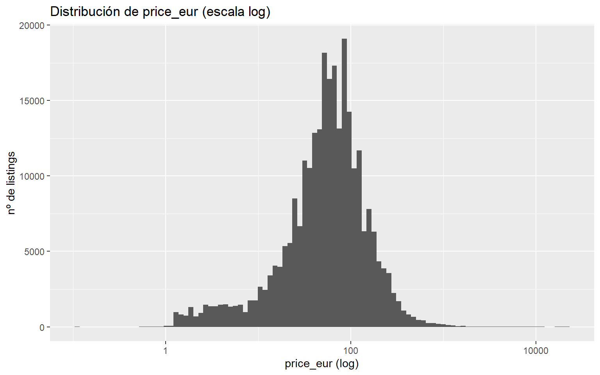
Ratio media/mediana = 1,43 — confirma cola larga hacia precios altos, pero no extrema (ya se excluyeron los casos más disparatados con precio_sospechoso).
price_eur por ciudadlistings_modelo %>%
group_by(city) %>%
summarise(
n = n(),
mediana = median(price_eur),
media = mean(price_eur),
cv = sd(price_eur) / mean(price_eur)
) %>%
arrange(desc(mediana))# A tibble: 10 × 5
city n mediana media cv
<chr> <int> <dbl> <dbl> <dbl>
1 New York 36452 84.5 112. 1.63
2 Paris 63689 80 105. 1.64
3 Sydney 32685 74.1 114. 1.87
4 Rome 27154 65 88.7 2.16
5 Cape Town 18467 53.6 96.0 1.43
6 Rio de Janeiro 25454 44.2 78.3 4.50
7 Hong Kong 6945 41.8 69.4 2.23
8 Mexico City 19677 33.0 48.2 2.51
9 Bangkok 18805 27.3 42.8 2.48
10 Istanbul 23800 4.47 6.86 5.94ggplot(listings_modelo, aes(x = reorder(city, price_eur, FUN = median), y = price_eur)) +
geom_boxplot(outlier.alpha = 0.1) +
scale_y_log10() +
coord_flip() +
labs(title = "price_eur por ciudad (escala log)", x = NULL, y = "price_eur (log)")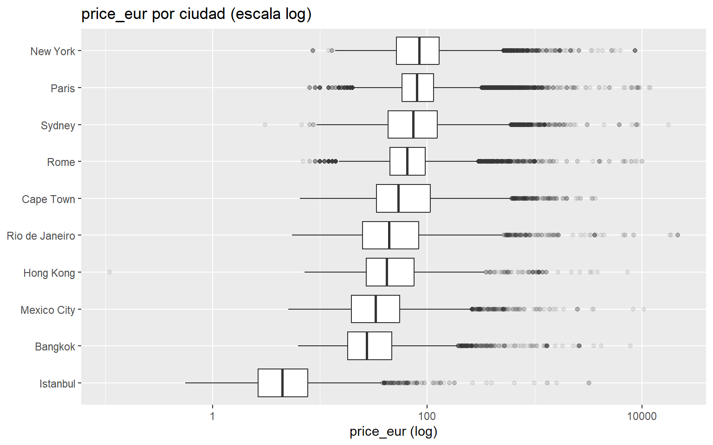
modelo_solo_city <- lm(log(price_eur) ~ city, data = listings_modelo)
summary(modelo_solo_city)$r.squared[1] 0.562149Solo city, sin ninguna otra variable, explica el 56,2% de la varianza de log(price_eur) — un porcentaje muy alto que justifica con fuerza normalizar el precio por la mediana de cada ciudad antes de modelar (decisión de la sección 2).
vars_numericas <- listings_modelo %>%
select(price_eur, accommodates, bedrooms, n_amenities, minimum_nights,
reviews_por_mes_activo, host_total_listings_count, latitude, longitude)
cor(vars_numericas, use = "pairwise.complete.obs")[, "price_eur"] price_eur accommodates bedrooms
1.000000000 0.218064948 0.175850057
n_amenities minimum_nights reviews_por_mes_activo
0.075223695 0.017508320 -0.021724671
host_total_listings_count latitude longitude
0.021316538 -0.017650703 0.003667197 accommodates (0,218) y bedrooms (0,176) son las más fuertes; el resto, marginal — coherente con lo ya visto en el EDA relacional del clustering.
La tabla de la sección 1.3 muestra un salto anómalo en Istanbul: mediana de 4,47€, muy por debajo de la siguiente ciudad más barata (Bangkok, 27,3€), y un coeficiente de variación (5,94) casi el doble que el resto. Se investiga antes de asumir que es simplemente “un mercado más barato”:
listings_modelo %>%
filter(city == "Istanbul") %>%
summarise(mediana_price_local = median(price), mediana_price_eur = median(price_eur))# A tibble: 1 × 2
mediana_price_local mediana_price_eur
<dbl> <dbl>
1 250 4.47listings_modelo %>%
filter(city == "Mexico City") %>%
summarise(mediana_price_local = median(price), mediana_price_eur = median(price_eur))# A tibble: 1 × 2
mediana_price_local mediana_price_eur
<dbl> <dbl>
1 650 33.0listings_modelo %>%
group_by(city) %>%
summarise(host_since_mediana = median(host_since, na.rm = TRUE)) %>%
arrange(host_since_mediana)# A tibble: 10 × 2
city host_since_mediana
<chr> <date>
1 Paris 2015-07-03
2 New York 2015-08-03
3 Rome 2015-10-09
4 Sydney 2016-01-07
5 Rio de Janeiro 2016-02-26
6 Hong Kong 2016-04-18
7 Cape Town 2016-04-28
8 Mexico City 2017-01-19
9 Bangkok 2017-01-25
10 Istanbul 2018-05-11 Confirmado: es la conversión a EUR, no el precio local. 250 TRY se convierten en solo 4,47€, mientras que 650 MXN se convierten en 33€ — el precio local de Istanbul no es especialmente bajo. Es la manifestación real del riesgo ya documentado en el ETL (tipo de cambio fijo actual aplicado a un dataset histórico 2008-2021): la lira turca es, de las 10 monedas del dataset, la que ha sufrido la devaluación más extrema frente al euro en ese periodo. Que Istanbul tenga además la mediana de host_since más reciente de las 10 ciudades (2018, frente a 2015-2016 del resto) — lo que en teoría debería mitigar el problema— y aun así sea el caso más extremo, confirma que la magnitud de la devaluación domina sobre cualquier otro factor.
Alcance de la limitación: afecta a comparaciones de precio absoluto entre ciudades con monedas volátiles. No afecta a comparaciones dentro de la misma ciudad, porque el sesgo de conversión es una constante multiplicativa que se aplica por igual a todos los listings de esa ciudad:
\[\text{price\_eur}_i = k \times \text{price\_local}_i \quad \text{(misma } k \text{ para todos los listings de una ciudad)}\] Al normalizar por la mediana de la propia ciudad (target de la sección 2), la constante k se cancela algebraicamente:
\[\frac{\text{price\_eur}_i}{\text{mediana(price\_eur)}} = \frac{k \times \text{price\_local}_i}{k \times \text{mediana(price\_local)}} = \frac{\text{price\_local}_i}{\text{mediana(price\_local)}}\]
Por este motivo, el target price_relativo que se define en la sección 2 es inmune a esta distorsión.
Se comprueba explícitamente, en vez de asumirlo, si esta distorsión invalida alguna conclusión de la fase de clustering (TFM_Clustering):
bedrooms, n_amenities, accommodates, minimum_nights, reviews_por_mes_activo, latitude, longitude, host_total_listings_count) es price_eur — la distorsión nunca entra en el cálculo.precio_sospechoso: se calcula con un criterio relativo (Q3 + 3×IQR) dentro de cada ciudad — invariante a multiplicar todos los precios de una ciudad por la misma constante, así que los mismos listings se marcarían igual en euros o en moneda local.price_eur_mediana por cluster (sección 6 del clustering): aquí sí había que comprobarlo, ya que Istanbul podría desplazar la mediana de precio de algún cluster:vars_clustering <- listings %>%
filter(!precio_sospechoso) %>%
mutate(
reviews_por_mes_activo = replace_na(reviews_por_mes_activo, 0),
host_total_listings_count = replace_na(host_total_listings_count, median(host_total_listings_count, na.rm = TRUE))
) %>%
select(listing_id, bedrooms, n_amenities, accommodates, minimum_nights,
reviews_por_mes_activo, latitude, longitude, host_total_listings_count) %>%
mutate(
minimum_nights = log1p(minimum_nights),
host_total_listings_count = log1p(host_total_listings_count),
bedrooms = log1p(bedrooms),
reviews_por_mes_activo = log1p(reviews_por_mes_activo)
)
vars_scaled <- vars_clustering %>% select(-listing_id) %>% scale(center = TRUE, scale = TRUE)
set.seed(456)
modelo_k4 <- clara(vars_scaled, k = 4, metric = "euclidean", samples = 50, sampsize = 5000, pamLike = TRUE)
listings_perfil <- listings %>%
inner_join(vars_clustering %>% select(listing_id) %>% mutate(cluster_listing = modelo_k4$clustering), by = "listing_id")
con_istanbul <- listings_perfil %>%
group_by(cluster_listing) %>%
summarise(price_eur_mediana = median(price_eur)) %>%
arrange(price_eur_mediana) %>%
mutate(orden = row_number())
sin_istanbul <- listings_perfil %>%
filter(city != "Istanbul") %>%
group_by(cluster_listing) %>%
summarise(price_eur_mediana = median(price_eur)) %>%
arrange(price_eur_mediana) %>%
mutate(orden = row_number())
con_istanbul# A tibble: 4 × 3
cluster_listing price_eur_mediana orden
<int> <dbl> <int>
1 1 49 1
2 4 55.6 2
3 2 64.7 3
4 3 88.9 4sin_istanbul# A tibble: 4 × 3
cluster_listing price_eur_mediana orden
<int> <dbl> <int>
1 1 55 1
2 4 55.6 2
3 2 65 3
4 3 99.0 4identical(con_istanbul$cluster_listing, sin_istanbul$cluster_listing)[1] TRUElistings_perfil %>%
group_by(cluster_listing) %>%
summarise(pct_istanbul = mean(city == "Istanbul") * 100)# A tibble: 4 × 2
cluster_listing pct_istanbul
<int> <dbl>
1 1 13.1
2 2 2.35
3 3 9.71
4 4 0 Confirmado: el orden de los 4 clusters por precio mediano es idéntico con y sin Istanbul (TRUE). Cambian los valores absolutos (49€→55€, 88,9€→99€…), pero no el ranking — coherente con que Istanbul nunca supera el 13,1% de ningún cluster, así que su distorsión se diluye al mezclarse con el resto de ciudades. La validación del clustering con price_eur se sostiene.
Se detecta y confirma una limitación real (distorsión del tipo de cambio fijo en comparaciones de precio absoluto entre ciudades, especialmente Istanbul), pero se demuestra —algebraicamente y con datos— que no invalida ni el clustering ya construido ni el modelo de precio que se entrena a continuación (sección 2), ya que este último usa un target normalizado por ciudad que cancela la distorsión.
Nota para la sección 10 (aplicación práctica): al deshacer la normalización de una predicción relativa para dar un precio recomendado en euros (precio_recomendado = predicción_relativa × mediana(price_eur) de esa ciudad), la mediana usada sí hereda el sesgo de conversión para ciudades con monedas volátiles. La posición relativa dentro del mercado es fiable; la cifra absoluta en euros para Istanbul en particular puede estar subestimada.
Se valida con rigor completo el hallazgo preliminar de la fase de clustering (sección 3.10 de TFM_Clustering.qmd: R²=0,342 con solo 7 variables y lm), esta vez con el conjunto completo de variables candidatas y separando dos efectos que antes estaban mezclados: cuánto aporta el logaritmo por sí solo, y cuánto aporta además normalizar por la mediana de cada ciudad.
Mismo conjunto ampliado de 33 variables que en la fase de clustering (secciones 3.4-3.5). Se añade una variable nueva, price_relativo, definida como el precio de cada alojamiento dividido por la mediana de precio de su propia ciudad:
\[\text{price\_relativo}_i = \frac{\text{price\_eur}_i}{\text{mediana(price\_eur de su ciudad)}}\]
Un valor de 1 significa “exactamente la mediana de su mercado”; 1,5 significa “un 50% por encima de la mediana de su ciudad”; 0,5, “la mitad de la mediana de su ciudad” — es la variable que permite comparar alojamientos de ciudades distintas en una misma escala relativa, sin que la escala absoluta de precio de cada mercado (sección 1.3) distorsione la comparación:
moda_superhost <- names(sort(table(listings$host_is_superhost), decreasing = TRUE))[1]
moda_identity <- names(sort(table(listings$host_identity_verified), decreasing = TRUE))[1]
moda_profile_pic <- names(sort(table(listings$host_has_profile_pic), decreasing = TRUE))[1]
vars_candidatas <- listings %>%
filter(!precio_sospechoso) %>%
mutate(
total_reviews = replace_na(total_reviews, 0),
reviews_por_mes_activo = replace_na(reviews_por_mes_activo, 0),
PC1_reviews = replace_na(PC1_reviews, 0),
host_is_superhost = replace_na(host_is_superhost, as.logical(moda_superhost)),
host_identity_verified = replace_na(host_identity_verified, as.logical(moda_identity)),
host_has_profile_pic = replace_na(host_has_profile_pic, as.logical(moda_profile_pic)),
host_total_listings_count = replace_na(host_total_listings_count, median(host_total_listings_count, na.rm = TRUE))
) %>%
group_by(city) %>%
mutate(price_relativo = price_eur / median(price_eur)) %>%
ungroup() %>%
select(price_eur, price_relativo, accommodates, bedrooms, n_amenities, minimum_nights,
maximum_nights, PC1_reviews, total_reviews, reviews_por_mes_activo,
latitude, longitude, host_is_superhost, host_identity_verified,
host_has_profile_pic, host_total_listings_count,
starts_with("has_"), room_type, city) %>%
mutate(across(c(room_type, city), as.factor))
sum(is.na(vars_candidatas))[1] 0Se entrenan tres modelos Random Forest, idénticos salvo por la variable que intentan predecir (el target), sobre la misma muestra de 20.000 listings y con validación cruzada de 10 pliegues, para que la comparación sea limpia:
price_eur en bruto: el precio en euros, sin ninguna transformación. Es el punto de partida, el enfoque más simple.log(price_eur): el logaritmo del precio, con city incluida como variable predictora más entre las 33. Aísla el efecto de solo transformar logarítmicamente, dejando que el propio modelo aprenda el efecto de la ciudad por su cuenta.log(price_relativo): el logaritmo de la variable definida en la sección 2.1, que ya lleva la normalización por ciudad incorporada antes de transformar. Combina las dos ideas (logaritmo + normalización explícita).set.seed(123)
muestra <- vars_candidatas %>% slice_sample(n = 20000)
predictoras <- muestra %>% select(-price_eur, -price_relativo)
control <- trainControl(method = "cv", number = 10)
# A: price_eur en bruto
set.seed(123)
modelo_bruto <- train(x = predictoras, y = muestra$price_eur,
method = "rf", trControl = control, ntree = 200)
# B: log(price_eur) — solo el logaritmo, city como predictora
set.seed(123)
modelo_log <- train(x = predictoras, y = log(muestra$price_eur),
method = "rf", trControl = control, ntree = 200)
# C: log(price_relativo) — logaritmo + normalización explícita por ciudad
set.seed(123)
modelo_log_relativo <- train(x = predictoras, y = log(muestra$price_relativo),
method = "rf", trControl = control, ntree = 200)
modelo_bruto$results mtry RMSE Rsquared MAE RMSESD RsquaredSD MAESD
1 2 159.7162 0.1922239 41.54043 52.62082 0.1385862 2.012299
2 17 159.9062 0.1885693 39.20438 53.09531 0.1440220 1.924707
3 33 170.7654 0.1404916 40.29426 48.55599 0.1238878 2.358291modelo_log$results mtry RMSE Rsquared MAE RMSESD RsquaredSD MAESD
1 2 0.5759650 0.7676043 0.4349608 0.01373787 0.01628655 0.008169493
2 17 0.4925273 0.7987840 0.3632581 0.01712252 0.01543279 0.010129164
3 33 0.4994697 0.7929784 0.3676400 0.01652075 0.01500963 0.011025867modelo_log_relativo$results mtry RMSE Rsquared MAE RMSESD RsquaredSD MAESD
1 2 0.5348615 0.5009057 0.4036606 0.01398882 0.02011767 0.010124930
2 17 0.4971331 0.5320799 0.3674718 0.01416761 0.01918080 0.008574910
3 33 0.5012568 0.5234417 0.3699301 0.01374318 0.01921023 0.009150902Cada tabla muestra 3 filas porque caret prueba automáticamente 3 valores de mtry (el número de variables que Random Forest considera en cada división de un árbol, elegido al azar entre las candidatas) y se queda con el que mejor rendimiento da en la validación cruzada — es un parámetro de ajuste del propio algoritmo, no una decisión que se tome a mano en este caso.
A primera vista, el R² de B (0,80) parece muy superior al de C (0,53) — pero es un artefacto de comparar dos variables con cantidades de varianza total muy distintas, no de que un modelo prediga mejor que el otro: city sola ya explica el 56,2% de log(price_eur) (sección 1.4), así que el modelo B “recupera gratis” esa parte del problema, mientras que C ya se la ha quitado al target antes de empezar (divide por la mediana de la ciudad). El MAE en escala logarítmica es casi idéntico entre ambos (0,363 en B, 0,370 en C) — la señal real de que ambos predicen con una precisión equivalente, solo que sobre “problemas” de dificultad distinta.
pred_B_eur <- exp(predict(modelo_log, newdata = predictoras))
medianas_ciudad <- muestra %>% group_by(city) %>% summarise(mediana_ciudad = median(price_eur))
pred_C_relativo <- exp(predict(modelo_log_relativo, newdata = predictoras))
pred_C_eur <- pred_C_relativo * medianas_ciudad$mediana_ciudad[match(muestra$city, medianas_ciudad$city)]
cat("MAE en euros (modelo B, log(price_eur) directo):", mean(abs(pred_B_eur - muestra$price_eur)), "\n")MAE en euros (modelo B, log(price_eur) directo): 17.0834 cat("MAE en euros (modelo C, log(price_relativo) revertido):", mean(abs(pred_C_eur - muestra$price_eur)), "\n")MAE en euros (modelo C, log(price_relativo) revertido): 17.33507 17,08€ (B) frente a 17,34€ (C) — prácticamente empatados (0,26€ de diferencia). En la unidad que de verdad importa para el negocio, ambos enfoques rinden igual.
La decisión no se toma por rendimiento (empatados), sino por dónde y cómo se localiza el sesgo de conversión de moneda documentado en la sección 1.6:
price_relativo): el sesgo se cancela algebraicamente al calcular el target (sección 1.6) y solo reaparece en un único paso explícito y aislado: la multiplicación final para volver a euros (predicción_relativa × mediana(price_eur)). Todo lo anterior —entrenamiento, predicción relativa— está limpio del sesgo.log(price_eur) con city como predictora): el sesgo está presente desde el primer dato de entrenamiento — los propios valores de price_eur de Istanbul ya vienen distorsionados antes de que el modelo empiece a aprender. No hay ningún punto limpio ni aislable en todo el proceso.Ambos modelos acaban reproduciendo el mismo sesgo en la cifra final en euros (por eso el MAE en euros es casi idéntico) — la diferencia no es “cuánto sesgo hay”, sino si ese sesgo queda contenido en una única línea de código, fácil de señalar y de corregir en el futuro, o diluido dentro de la estructura entera del modelo.
Se adopta log(price_relativo) como target principal, con dos consecuencias para el diseño del output del modelo:
price_eur de la ciudad — con un aviso de fiabilidad reducida acotado a Istanbul (y en menor medida Mexico City, Cape Town, Rio de Janeiro), en vez de aplicar la advertencia a las 10 ciudades por igual.Esta decisión no se basa en una mejora de precisión (los targets están empatados en euros), sino en la trazabilidad y mantenibilidad del sesgo conocido, y en el mejor encaje narrativo con el objetivo de negocio del proyecto.
Se repite el proceso de selección de variables de la fase de clustering (sección 3 de TFM_Clustering), pero con el nuevo target (log_price_relativo) en vez de price_eur bruto — no es redundante rehacerlo, porque quitarle al target el efecto de la ciudad puede cambiar qué variables resultan más relevantes.
Mismo conjunto de 33 variables candidatas de la sección 2.1, con log_price_relativo como target:
vars_candidatas <- vars_candidatas %>%
mutate(log_price_relativo = log(price_relativo)) %>%
select(log_price_relativo, accommodates, bedrooms, n_amenities, minimum_nights,
maximum_nights, PC1_reviews, total_reviews, reviews_por_mes_activo,
latitude, longitude, host_is_superhost, host_identity_verified,
host_has_profile_pic, host_total_listings_count,
starts_with("has_"), room_type, city)
sum(is.na(vars_candidatas))[1] 0atributos_cfs <- cfs(log_price_relativo ~ ., data = vars_candidatas)
atributos_cfs[1] "accommodates"CFS se queda con una única variable (accommodates) — más escueto todavía que en el clustering (donde se quedaba con accommodates + bedrooms sobre price_eur bruto). Coherente con lo esperado: al quitarle al target el efecto de city (la señal más fuerte que había), lo que queda es una relación lineal todavía más débil, y CFS, al basarse en correlación lineal, rinde peor cuanto más débil es esa señal.
set.seed(123)
muestra_rfe <- vars_candidatas %>% slice_sample(n = 20000)
x_rfe <- muestra_rfe %>% select(-log_price_relativo)
y_rfe <- muestra_rfe$log_price_relativo
control_rfe <- rfeControl(method = "cv", number = 10, functions = rfFuncs)
output_rfe <- rfe(x_rfe, y_rfe, sizes = c(1, 3, 5, 8, 10, 15, 20, ncol(x_rfe)),
metric = "RMSE", rfeControl = control_rfe, ntree = 200)
output_rfe
Recursive feature selection
Outer resampling method: Cross-Validated (10 fold)
Resampling performance over subset size:
Variables RMSE Rsquared MAE RMSESD RsquaredSD MAESD Selected
1 0.6587 0.1767 0.5062 0.01919 0.01902 0.009064
3 0.5904 0.3416 0.4506 0.02557 0.05107 0.015117
5 0.5689 0.3995 0.4327 0.02218 0.02084 0.011196
8 0.5280 0.4737 0.3954 0.02048 0.02033 0.008465
10 0.5144 0.4983 0.3825 0.02102 0.02039 0.007994
15 0.5008 0.5250 0.3709 0.02132 0.02039 0.008779
20 0.4968 0.5336 0.3674 0.02197 0.01993 0.008927
33 0.4961 0.5355 0.3670 0.02323 0.02174 0.009211 *
The top 5 variables (out of 33):
room_type, bedrooms, accommodates, host_total_listings_count, longitudeplot(output_rfe, metric = "RMSE", type = c("o", "g"))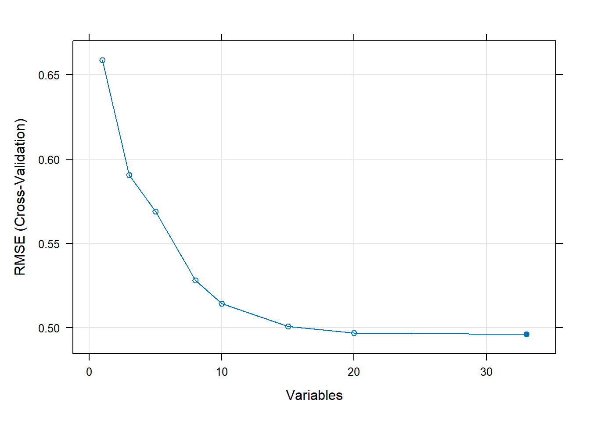
El aplanamiento es claro a partir de 15 variables (de 15 a 33, solo 0,005 de mejora en RMSE frente a caídas de 0,01-0,07 en los tramos anteriores). Se fija el tamaño en 15, mismo criterio de codo aplicado en el clustering:
vars_15 <- output_rfe$control$functions$selectVar(output_rfe$variables, 15)
vars_15 [1] "room_type" "bedrooms"
[3] "accommodates" "host_total_listings_count"
[5] "longitude" "latitude"
[7] "has_ac" "minimum_nights"
[9] "has_response_rate" "city"
[11] "n_amenities" "has_acceptance_rate"
[13] "reviews_por_mes_activo" "has_dishwasher"
[15] "total_reviews" Sobre la posición de city: en el RFE ampliado del clustering (33 variables, target price_eur bruto, sección 3.5 de TFM_Clustering), city ocupaba el puesto 14 de 15 — ya entonces con poca relevancia relativa, probablemente porque latitude/longitude ya capturaban la mayor parte de la señal geográfica (como se concluyó en esa misma sección). Con log_price_relativo, city sube ligeramente al puesto 10 — su importancia se mantiene estable o incluso aumenta un poco, no disminuye: pese a haberle quitado al target el nivel medio de cada ciudad, sigue aportando una señal residual de magnitud similar a la que ya tenía con el precio en bruto.
Comparando estas 15 variables con las 15 obtenidas en el clustering: 13 de las 15 coinciden — solo cambian has_gym/host_identity_verified (presentes con price_eur bruto) por has_dishwasher/total_reviews (presentes con log_price_relativo). Es una señal de estabilidad genuina: el conjunto de variables relevantes no depende demasiado de la forma exacta en que se defina el target, lo cual da confianza en que no se trata de un artefacto de una elección concreta.
Las 15 variables (room_type, bedrooms, accommodates, host_total_listings_count, longitude, latitude, has_ac, minimum_nights, has_response_rate, city, n_amenities, has_acceptance_rate, reviews_por_mes_activo, has_dishwasher, total_reviews) se llevan a las fases siguientes (partición train/test, entrenamiento de XGBoost y Random Forest).
Se reserva un conjunto de test (holdout), separado por completo del entrenamiento, para tener una evaluación final honesta de los modelos — a diferencia de la validación cruzada usada en las secciones 2 y 3, que sirve para comparar y elegir entre alternativas, no para dar la cifra de rendimiento definitiva.
Las 15 variables definitivas más el target, listing_id (trazabilidad) y price_eur (para evaluar en euros reales en la sección 7):
moda_superhost <- names(sort(table(listings$host_is_superhost), decreasing = TRUE))[1]
moda_identity <- names(sort(table(listings$host_identity_verified), decreasing = TRUE))[1]
listings_modelo <- listings %>%
filter(!precio_sospechoso) %>%
mutate(
total_reviews = replace_na(total_reviews, 0),
reviews_por_mes_activo = replace_na(reviews_por_mes_activo, 0),
host_is_superhost = replace_na(host_is_superhost, as.logical(moda_superhost)),
host_identity_verified = replace_na(host_identity_verified, as.logical(moda_identity)),
host_total_listings_count = replace_na(host_total_listings_count, median(host_total_listings_count, na.rm = TRUE))
) %>%
group_by(city) %>%
mutate(price_relativo = price_eur / median(price_eur)) %>%
ungroup() %>%
mutate(log_price_relativo = log(price_relativo)) %>%
select(listing_id, log_price_relativo, price_eur, city,
room_type, bedrooms, accommodates, host_total_listings_count,
longitude, latitude, has_ac, minimum_nights, has_response_rate,
n_amenities, has_acceptance_rate, reviews_por_mes_activo,
has_dishwasher, total_reviews) %>%
mutate(room_type = as.factor(room_type), city = as.factor(city))
sum(is.na(listings_modelo))[1] 0nrow(listings_modelo)[1] 273128Con tamaños de ciudad tan dispares (Hong Kong: 6.945 filas frente a Paris: 63.689), una partición aleatoria simple podría dejar alguna ciudad pequeña infrarrepresentada en el test por pura casualidad de muestreo. Se estratifica explícitamente por city, para que la proporción de cada una se mantenga igual en ambos conjuntos:
set.seed(123)
indices_train <- createDataPartition(listings_modelo$city, p = 0.8, list = FALSE)
train_set <- listings_modelo[indices_train, ]
test_set <- listings_modelo[-indices_train, ]
nrow(train_set)[1] 218506nrow(test_set)[1] 54622bind_rows(
train_set %>% count(city) %>% mutate(pct = round(100 * n / sum(n), 2), conjunto = "train"),
test_set %>% count(city) %>% mutate(pct = round(100 * n / sum(n), 2), conjunto = "test")
) %>%
pivot_wider(names_from = conjunto, values_from = c(n, pct)) %>%
arrange(desc(pct_train))# A tibble: 10 × 5
city n_train n_test pct_train pct_test
<fct> <int> <int> <dbl> <dbl>
1 Paris 50952 12737 23.3 23.3
2 New York 29162 7290 13.4 13.4
3 Sydney 26148 6537 12.0 12.0
4 Rome 21724 5430 9.94 9.94
5 Rio de Janeiro 20364 5090 9.32 9.32
6 Istanbul 19040 4760 8.71 8.71
7 Mexico City 15742 3935 7.2 7.2
8 Bangkok 15044 3761 6.88 6.89
9 Cape Town 14774 3693 6.76 6.76
10 Hong Kong 5556 1389 2.54 2.54La proporción de cada ciudad coincide entre train y test hasta el segundo decimal en prácticamente todos los casos — la estratificación funciona como se esperaba.
train_set %>% summarise(media = mean(log_price_relativo), sd = sd(log_price_relativo))# A tibble: 1 × 2
media sd
<dbl> <dbl>
1 0.0514 0.721test_set %>% summarise(media = mean(log_price_relativo), sd = sd(log_price_relativo))# A tibble: 1 × 2
media sd
<dbl> <dbl>
1 0.0520 0.724La media y desviación típica del target son casi idénticas entre ambos conjuntos (0,051/0,721 en train, 0,052/0,724 en test) — el test set es representativo del problema que se quiere resolver, no una muestra sesgada por casualidad.
Con train_set (218.506 filas) y test_set (54.622 filas) definidos, se entrenan los modelos de las secciones 5 y 6 solo sobre train_set, y se evalúan una única vez sobre test_set en la sección 7.
Se entrena en dos pasos: primero se buscan los hiperparámetros sobre una muestra (por coste computacional), y después se entrena una única vez el modelo final con esos hiperparámetros ya fijados, sobre el train_set completo — coherente con el mismo principio de “explorar en muestra, confirmar en completo” ya aplicado en fases anteriores del proyecto.
A diferencia de Random Forest (secciones 2-3), que admite variables factor directamente, XGBoost necesita que todos los predictores sean numéricos — no sabe interpretar categorías como texto. room_type y city se codifican como variables dummy (one-hot encoding, una columna binaria por categoría) con caret::dummyVars(), ajustado una única vez sobre el train_set completo para que el conjunto de columnas resultante sea idéntico en el tuning, el modelo final, y la evaluación sobre test_set de la sección 7:
predictoras_completas <- train_set %>%
select(-listing_id, -log_price_relativo, -price_eur)
dummies <- dummyVars(~ ., data = predictoras_completas, fullRank = TRUE)Nota metodológica: se descarta caret::train(method="xgbTree") por una incompatibilidad conocida entre versiones recientes de xgboost y el código de caret que envuelve este modelo (el objeto interno de xgboost cambió su representación y caret intenta modificarlo de una forma que ya no admite — error ALTLIST classes must provide a Set_elt method). Se usa en su lugar la API nativa de xgboost (xgb.cv/xgb.train), un enfoque igualmente habitual en la práctica para este algoritmo en concreto. Se usa parada temprana (early_stopping_rounds) para que cada combinación encuentre automáticamente su mejor nrounds, en vez de probarlo como un valor fijo más de la rejilla. La búsqueda cubre 4 hiperparámetros — max_depth, eta, subsample y colsample_bytree — con 3 valores cada uno (81 combinaciones):
set.seed(123)
muestra_tuning <- train_set %>% slice_sample(n = 20000)
predictoras_tuning <- predict(dummies, newdata = muestra_tuning) %>% as.data.frame()
dtrain_tuning <- xgb.DMatrix(
data = as.matrix(predictoras_tuning),
label = muestra_tuning$log_price_relativo
)
grid_xgb <- expand.grid(
max_depth = c(3, 6, 9),
eta = c(0.05, 0.1, 0.3),
subsample = c(0.6, 0.8, 1),
colsample_bytree = c(0.6, 0.8, 1)
)
set.seed(123)
resultados_tuning <- map_df(seq_len(nrow(grid_xgb)), function(i) {
params <- list(
objective = "reg:squarederror",
max_depth = grid_xgb$max_depth[i],
eta = grid_xgb$eta[i],
subsample = grid_xgb$subsample[i],
colsample_bytree = grid_xgb$colsample_bytree[i]
)
cv <- xgb.cv(
params = params,
data = dtrain_tuning,
nrounds = 1000,
nfold = 10,
early_stopping_rounds = 20,
verbose = 0
)
tibble(
max_depth = grid_xgb$max_depth[i],
eta = grid_xgb$eta[i],
subsample = grid_xgb$subsample[i],
colsample_bytree = grid_xgb$colsample_bytree[i],
nrounds = which.min(cv$evaluation_log$test_rmse_mean),
rmse_cv = min(cv$evaluation_log$test_rmse_mean)
)
})
resultados_tuning %>% arrange(rmse_cv) %>% head(10)# A tibble: 10 × 6
max_depth eta subsample colsample_bytree nrounds rmse_cv
<dbl> <dbl> <dbl> <dbl> <int> <dbl>
1 6 0.05 0.8 0.6 565 0.478
2 6 0.05 0.6 0.8 445 0.479
3 6 0.05 0.6 0.6 465 0.479
4 6 0.05 0.8 1 533 0.479
5 6 0.05 0.8 0.8 449 0.480
6 6 0.05 1 0.6 519 0.480
7 6 0.05 1 0.8 591 0.480
8 6 0.05 0.6 1 409 0.480
9 9 0.05 0.8 0.8 242 0.480
10 9 0.05 0.6 0.6 270 0.480mejor_combinacion <- resultados_tuning %>% arrange(rmse_cv) %>% slice(1)
mejor_combinacion# A tibble: 1 × 6
max_depth eta subsample colsample_bytree nrounds rmse_cv
<dbl> <dbl> <dbl> <dbl> <int> <dbl>
1 6 0.05 0.8 0.6 565 0.478La combinación ganadora es max_depth=6, eta=0,05, subsample=0,8, colsample_bytree=0,6 (RMSE de validación cruzada 0,478). La mejora frente a la rejilla pequeña anterior (mismos max_depth/eta, subsample/colsample_bytree fijos en 0,8, RMSE=0,482) es de solo 0,004 — marginal. De hecho, las 10 mejores combinaciones de las 81 probadas quedan todas en un rango muy estrecho (0,478-0,480), casi todas compartiendo max_depth=6/eta=0,05 como base y variando solo subsample/colsample_bytree sin apenas impacto en el resultado. Confirma lo que ya se intuía con la rejilla pequeña: el modelo es poco sensible a estos hiperparámetros dentro de rangos razonables — ampliar la búsqueda ha servido para confirmarlo con más rigor, no para encontrar una mejora sustancial.
# Se reconstruye el xgb.DMatrix dentro de este chunk (en vez de reutilizar el
# de la sección anterior): los objetos xgb.DMatrix son punteros a estructuras
# de C++ que no sobreviven al recuperarse de la caché de Quarto en una sesión
# de R nueva — hay que reconstruirlo a partir de datos "normales" (data frame)
# que sí sobreviven bien a la caché
dtrain_tuning_curva <- xgb.DMatrix(
data = as.matrix(predictoras_tuning),
label = muestra_tuning$log_price_relativo
)
# Se relanza un único xgb.cv más con la combinación ganadora, solo para
# quedarse con su evaluation_log completo y poder graficar la evolución
set.seed(123)
cv_ganadora <- xgb.cv(
params = list(
objective = "reg:squarederror",
max_depth = mejor_combinacion$max_depth,
eta = mejor_combinacion$eta,
subsample = mejor_combinacion$subsample,
colsample_bytree = mejor_combinacion$colsample_bytree
),
data = dtrain_tuning_curva,
nrounds = 1000,
nfold = 10,
early_stopping_rounds = 20,
verbose = 0
)
cv_ganadora$evaluation_log %>%
pivot_longer(cols = c(train_rmse_mean, test_rmse_mean),
names_to = "conjunto", values_to = "rmse") %>%
ggplot(aes(x = iter, y = rmse, color = conjunto)) +
geom_line() +
geom_vline(xintercept = mejor_combinacion$nrounds, linetype = "dashed", color = "grey40") +
labs(title = "Curva de aprendizaje: train vs test (validación cruzada)",
subtitle = "Línea vertical: ronda elegida por la parada temprana",
x = "ronda", y = "RMSE", color = NULL)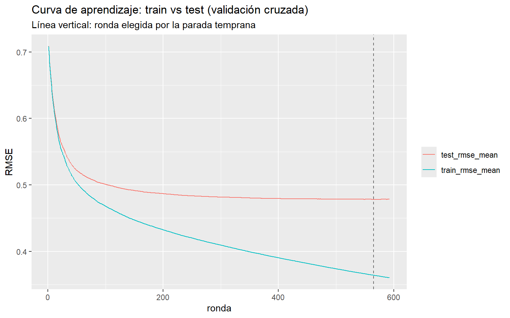
El error de entrenamiento sigue bajando más allá de la línea marcada, mientras que el de test se estabiliza (o empieza a subir ligeramente) — es la señal clásica de sobreajuste que la parada temprana está diseñada para evitar, deteniéndose en el punto donde el error de test deja de mejorar.
Se fijan los hiperparámetros ganadores (incluido el nrounds que encontró la parada temprana) y se entrena una única vez sobre el train_set completo (ya codificado con el mismo dummies de la sección 5.1):
predictoras_train <- predict(dummies, newdata = train_set) %>% as.data.frame()
dtrain_completo <- xgb.DMatrix(
data = as.matrix(predictoras_train),
label = train_set$log_price_relativo
)
params_finales <- list(
objective = "reg:squarederror",
max_depth = mejor_combinacion$max_depth,
eta = mejor_combinacion$eta,
subsample = mejor_combinacion$subsample,
colsample_bytree = mejor_combinacion$colsample_bytree
)
set.seed(123)
modelo_xgb_final <- xgb.train(
params = params_finales,
data = dtrain_completo,
nrounds = mejor_combinacion$nrounds
)
modelo_xgb_final##### xgb.Booster
call:
xgb.train(params = params_finales, data = dtrain_completo, nrounds = mejor_combinacion$nrounds)
# of features: 25
# of rounds: 565 El entrenamiento termina sin avisos: el modelo final usa 25 columnas (las 15 variables originales, expandidas por el one-hot encoding de room_type/city) y 565 rondas — coherente con el nrounds que encontró la parada temprana para la combinación ganadora de la rejilla ampliada. El modelo queda listo para evaluarse sobre test_set en la sección 7.
Se entrena un segundo modelo, Random Forest, sobre las mismas 15 variables y el mismo train_set, para poder justificar con datos en la sección 7 la elección del modelo principal — no basta con asumir que XGBoost es mejor, hay que comprobarlo.
A diferencia de XGBoost (sección 5.1), Random Forest admite variables factor directamente — no hace falta repetir la codificación dummy de room_type/ city. Se usa train_set tal cual, sin dummies:
set.seed(123)
muestra_rf_tuning <- train_set %>% slice_sample(n = 20000)
predictoras_rf_tuning <- muestra_rf_tuning %>%
select(-listing_id, -log_price_relativo, -price_eur)
ncol(predictoras_rf_tuning)[1] 15mtryMismo principio de las fases anteriores: se busca el hiperparámetro sobre una muestra de 20.000 filas del train_set, con validación cruzada de 10 pliegues:
control_rf <- trainControl(method = "cv", number = 10)
grid_rf <- expand.grid(mtry = c(2, 4, 6, 8, 10, 15))
set.seed(123)
modelo_rf_tuning <- train(
x = predictoras_rf_tuning,
y = muestra_rf_tuning$log_price_relativo,
method = "rf",
trControl = control_rf,
tuneGrid = grid_rf,
ntree = 200
)
modelo_rf_tuning$results %>% arrange(RMSE) mtry RMSE Rsquared MAE RMSESD RsquaredSD MAESD
1 6 0.4935235 0.5292088 0.3633445 0.02194507 0.02873281 0.009899533
2 4 0.4937887 0.5295755 0.3638270 0.02204059 0.02932005 0.010328910
3 8 0.4942590 0.5275305 0.3633628 0.02158747 0.02794965 0.009867451
4 10 0.4950341 0.5259251 0.3639031 0.02187905 0.02894365 0.010155721
5 15 0.4976857 0.5208947 0.3654265 0.02154454 0.02829421 0.010335705
6 2 0.5027618 0.5211793 0.3738598 0.02121278 0.02800204 0.008871263modelo_rf_tuning$bestTune mtry
3 6La combinación ganadora es mtry=6 (RMSE de validación cruzada 0,4935), muy cerca de mtry=4 (0,4937) y mtry=8 (0,4942) — de nuevo, poca sensibilidad a este hiperparámetro dentro de un rango razonable, el mismo patrón ya visto con XGBoost (sección 5.2). Los extremos de la rejilla (mtry=2 y mtry=15) sí quedan algo más alejados (0,503 y 0,498 respectivamente) — usar muy pocas o casi todas las variables en cada división empeora ligeramente el resultado, como cabría esperar.
Se entrena una única vez sobre el train_set completo, con el mtry ganador:
predictoras_rf_train <- train_set %>%
select(-listing_id, -log_price_relativo, -price_eur)
set.seed(123)
modelo_rf_final <- randomForest(
x = predictoras_rf_train,
y = train_set$log_price_relativo,
mtry = modelo_rf_tuning$bestTune$mtry,
ntree = 200
)
modelo_rf_final
Call:
randomForest(x = predictoras_rf_train, y = train_set$log_price_relativo, ntree = 200, mtry = modelo_rf_tuning$bestTune$mtry)
Type of random forest: regression
Number of trees: 200
No. of variables tried at each split: 6
Mean of squared residuals: 0.204642
% Var explained: 60.59El modelo explica un 60,59% de la varianza (OOB) — no es directamente comparable al RMSE de validación cruzada de XGBoost (son métricas distintas, sobre conjuntos distintos), la comparación justa se hace en la sección 7 con test_set.
Eficiencia de ejecución — hallazgo relevante para la memoria: esta fase 6 completa (búsqueda de mtry + modelo final) tardó 10 horas y 23 minutos, frente a los pocos minutos que tardó la fase 5 de XGBoost (81 combinaciones de hiperparámetros + modelo final incluidos). Es una diferencia de varios órdenes de magnitud, no un matiz menor. La explicación técnica: el paquete randomForest construye árboles sin límite de profundidad y evalúa todos los puntos de corte posibles en cada división, sin las optimizaciones de histogramas que usa XGBoost internamente — un coste que crece con fuerza según el tamaño del dataset (218.506 filas) y no escala bien a este volumen. Es un argumento de peso a favor de XGBoost como modelo principal, independiente de cuál acabe siendo más preciso.
Random Forest guarda internamente la evolución del error OOB según se van añadiendo árboles y la importancia de cada variable — se aprovechan directamente del objeto ya entrenado:
tibble(ntree = seq_along(modelo_rf_final$mse), oob_mse = modelo_rf_final$mse) %>%
ggplot(aes(x = ntree, y = oob_mse)) +
geom_line() +
labs(title = "Error OOB (MSE) según el número de árboles",
x = "nº de árboles", y = "MSE (out-of-bag)")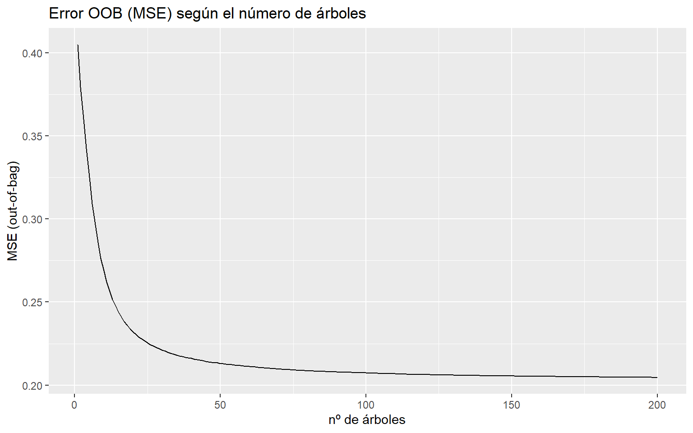
El error OOB cae con fuerza en los primeros 25-50 árboles (de en torno a 0,40 a 0,22) y a partir de ahí se aplana casi por completo — entre 100 y 200 árboles la mejora es mínima. Sugiere que un ntree bastante menor (50-100) habría dado un resultado casi idéntico, a una fracción del coste computacional de las 10h23min de esta fase — un dato relevante para la discusión de eficiencia de ejecución.
importancia_rf <- as.data.frame(modelo_rf_final$importance) %>%
rownames_to_column("variable") %>%
arrange(desc(IncNodePurity))
ggplot(importancia_rf, aes(x = reorder(variable, IncNodePurity), y = IncNodePurity)) +
geom_col(fill = "steelblue") +
coord_flip() +
labs(title = "Importancia de variables (IncNodePurity)", x = NULL, y = "IncNodePurity")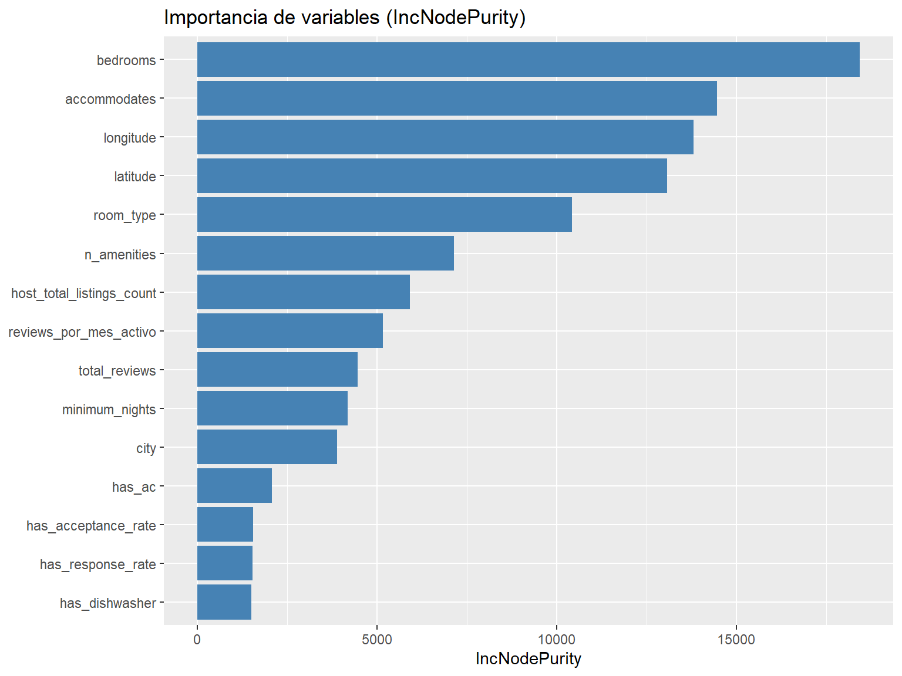
En cuanto a la importancia de variables, el top-5 (bedrooms, accommodates, longitude, latitude, room_type) coincide, como conjunto, con el núcleo de variables que ya destacaba el RFE de la sección 3 (mismo grupo de tamaño, ubicación y tipo de alojamiento), aunque el orden exacto varía ligeramente entre los dos métodos (RFE situaba room_type primero; Random Forest, bedrooms). Ambos métodos coinciden también en que las variables has_* booleanas quedan sistemáticamente al final — una validación cruzada más entre técnicas distintas, en la línea de las ya encontradas varias veces en la fase de clustering.
test_setMomento decisivo: comparar XGBoost y Random Forest con datos que ninguno de los dos ha visto durante el entrenamiento — la única comparación que cuenta de verdad, a diferencia de los RMSE de validación cruzada de las secciones 5 y 6 (que sirvieron para elegir hiperparámetros, no para dar una cifra final).
test_setXGBoost necesita la misma codificación dummy que se ajustó sobre train_set en la sección 5.1 (dummies); Random Forest admite test_set directamente:
predictoras_test_xgb <- predict(dummies, newdata = test_set) %>% as.data.frame()
predictoras_test_rf <- test_set %>%
select(-listing_id, -log_price_relativo, -price_eur)pred_xgb_log <- predict(modelo_xgb_final, as.matrix(predictoras_test_xgb))
pred_rf_log <- predict(modelo_rf_final, predictoras_test_rf)log_price_relativo)calcular_metricas <- function(real, pred) {
tibble(
RMSE = sqrt(mean((real - pred)^2)),
MAE = mean(abs(real - pred)),
R2 = cor(real, pred)^2
)
}
resultados_test_log <- bind_rows(
calcular_metricas(test_set$log_price_relativo, pred_xgb_log) %>% mutate(modelo = "XGBoost"),
calcular_metricas(test_set$log_price_relativo, pred_rf_log) %>% mutate(modelo = "Random Forest")
) %>% relocate(modelo)
resultados_test_log# A tibble: 2 × 4
modelo RMSE MAE R2
<chr> <dbl> <dbl> <dbl>
1 XGBoost 0.463 0.340 0.591
2 Random Forest 0.453 0.328 0.610Random Forest resulta ligeramente mejor que XGBoost en el test_set: RMSE 0,453 frente a 0,463 (2,2% menor), MAE 0,328 frente a 0,340 (3,5% menor), R² 0,610 frente a 0,591. Puede parecer contradictorio revisando el RMSE de validación cruzada (XGBoost 0,478 vs Random Forest 0,494 durante el tuning) pero el RMSE de CV se usó para elegir hiperparámetros dentro de cada modelo, no para comparar un modelo contra el otro de forma definitiva; la única comparación que cuenta de verdad es esta, sobre datos que ninguno de los dos vio nunca.
Se revierte la transformación (exp() para deshacer el logaritmo, y multiplicar por la mediana de price_eur de cada ciudad para deshacer la normalización) — la unidad que de verdad importa de cara al sponsor. La mediana usada es la misma que generó price_relativo en la sección 4.1 (calculada sobre listings_modelo completo, antes de la partición), para que la reversión sea matemáticamente consistente con la construcción original del target:
medianas_ciudad <- listings_modelo %>%
group_by(city) %>%
summarise(mediana_ciudad = median(price_eur), .groups = "drop")
mediana_test <- medianas_ciudad$mediana_ciudad[match(test_set$city, medianas_ciudad$city)]
pred_xgb_eur <- exp(pred_xgb_log) * mediana_test
pred_rf_eur <- exp(pred_rf_log) * mediana_test
calcular_metricas_eur <- function(real, pred) {
tibble(RMSE_eur = sqrt(mean((real - pred)^2)), MAE_eur = mean(abs(real - pred)))
}
resultados_test_eur <- bind_rows(
calcular_metricas_eur(test_set$price_eur, pred_xgb_eur) %>% mutate(modelo = "XGBoost"),
calcular_metricas_eur(test_set$price_eur, pred_rf_eur) %>% mutate(modelo = "Random Forest")
) %>% relocate(modelo)
resultados_test_eur# A tibble: 2 × 3
modelo RMSE_eur MAE_eur
<chr> <dbl> <dbl>
1 XGBoost 187. 31.3
2 Random Forest 187. 30.8El mismo patrón se confirma en euros: RMSE prácticamente empatado (187€ en ambos), MAE de Random Forest ligeramente mejor (30,8€ frente a 31,3€ de XGBoost, una diferencia de apenas 0,5€). El orden coincide con el visto en escala logarítmica — Random Forest gana, aunque por un margen pequeño en términos absolutos.
Nota de fiabilidad: como se documentó en la sección 2.1/1.6, la cifra en euros para Istanbul en particular hereda el sesgo del tipo de cambio fijo (su mediana de referencia está artificialmente baja) — el error en euros para esa ciudad concreta puede no ser representativo del resto.
resultados_test_log %>%
pivot_longer(cols = c(RMSE, MAE), names_to = "metrica", values_to = "valor") %>%
ggplot(aes(x = modelo, y = valor, fill = modelo)) +
geom_col(show.legend = FALSE) +
facet_wrap(~ metrica, scales = "free_y") +
labs(title = "RMSE y MAE en test_set (escala log_price_relativo)", x = NULL, y = NULL)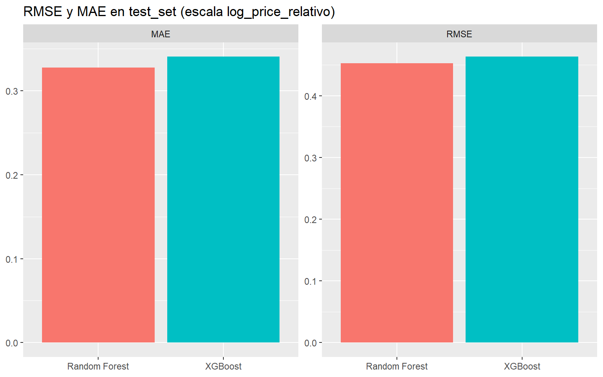
Las barras confirman visualmente lo ya visto en las tablas: Random Forest algo por debajo de XGBoost en ambas métricas, aunque la diferencia es pequeña en términos relativos — ninguna de las dos barras “domina” de forma aplastante a la otra.
El diagnóstico visual estándar de un modelo de regresión: cuanto más cerca estén los puntos de la diagonal, mejor predice el modelo. Se usa la escala en euros (más interpretable) y una muestra de 5.000 puntos del test (para no saturar el gráfico con las 54.622 filas completas):
set.seed(123)
muestra_plot <- sample(nrow(test_set), 5000)
tibble(
real = rep(test_set$price_eur[muestra_plot], 2),
predicho = c(pred_xgb_eur[muestra_plot], pred_rf_eur[muestra_plot]),
modelo = rep(c("XGBoost", "Random Forest"), each = 5000)
) %>%
ggplot(aes(x = real, y = predicho)) +
geom_point(alpha = 0.15, size = 0.8) +
geom_abline(slope = 1, intercept = 0, color = "red", linetype = "dashed") +
scale_x_log10() +
scale_y_log10() +
facet_wrap(~ modelo) +
labs(title = "Precio predicho vs real (escala log-log, línea roja = predicción perfecta)",
x = "price_eur real", y = "price_eur predicho")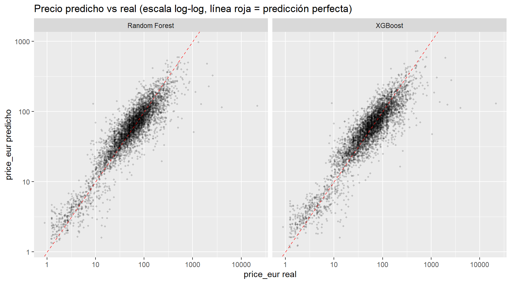
Los dos paneles se ven prácticamente indistinguibles a simple vista — coherente con la pequeña diferencia numérica entre ambos modelos. La nube de puntos sigue bien la diagonal en el rango medio de precios (aproximadamente 10€-300€, donde se concentra la mayoría del dataset), pero se dispersa notablemente en los extremos: precios muy bajos (<10€) y muy altos (>300€) se predicen con más error en ambos modelos. Es el patrón esperable dado el techo de poder predictivo ya documentado en la sección 1 y en el clustering — se retoma con más detalle en la sección 9 (análisis de residuos).
Ningún modelo domina al otro en todos los aspectos — la elección depende de qué se priorice:
| Criterio | XGBoost | Random Forest |
|---|---|---|
| Precisión en test (RMSE/MAE) | Ligeramente peor (2-4%) | Ligeramente mejor |
| Tiempo de entrenamiento | 17 Minutos (81 combinaciones + modelo final) | 10h23min (6 combinaciones + modelo final) |
| Sensibilidad a hiperparámetros | Baja (superficie de RMSE casi plana) | Baja (mismo patrón) |
| Preparación de datos necesaria | Requiere codificación dummy de categóricas | Admite factores directamente |
| Reentrenar con datos nuevos (ej. mercado que cambia con el tiempo) | Rápido, viable con frecuencia | Costoso, poco práctico reentrenar a menudo |
| Variables más importantes | Coherente con Random Forest (sección 8) | Coherente con XGBoost |
Cuándo tendría sentido priorizar Random Forest: si el objetivo es maximizar precisión por encima de todo, con acceso a suficiente tiempo/recursos de cómputo y sin necesidad de reentrenar el modelo con frecuencia (por ejemplo, un análisis puntual que se hace una sola vez).
Cuándo tendría sentido priorizar XGBoost: si el modelo necesita reentrenarse periódicamente conforme cambian los precios y la oferta del mercado (el caso más realista para una herramienta de recomendación de precio en producción), o si los recursos de cómputo disponibles son limitados — situaciones donde la diferencia de horas frente a minutos importa mucho más que una mejora marginal del 2-4% en el error.
Para este proyecto, se adopta XGBoost como modelo principal, dado el enfoque de negocio (una herramienta pensada para uso continuado, no un análisis de un solo uso) — pero se documenta explícitamente que es una decisión de compromiso condicionada a ese contexto, no una afirmación de que XGBoost sea superior en términos absolutos. Random Forest queda documentado como alternativa válida, y su elección sería igualmente defendible bajo otras prioridades.
Con XGBoost como modelo principal, se examina qué variables mueven realmente el precio y en qué dirección.
importancia_xgb <- xgb.importance(feature_names = colnames(predictoras_train), model = modelo_xgb_final)
importancia_xgb Feature Gain Cover Frequency
<char> <num> <num> <num>
1: bedrooms 0.268553186 0.040979482 0.044894716
2: accommodates 0.225822260 0.050041134 0.067173986
3: longitude 0.093075084 0.192274989 0.157849699
4: latitude 0.082391970 0.196505741 0.153357171
5: room_type.Private room 0.072146605 0.020999722 0.021270744
6: host_total_listings_count 0.037565722 0.111393115 0.114880352
7: has_acTRUE 0.028647348 0.019081369 0.023012744
8: room_type.Shared room 0.025248613 0.019595495 0.010329758
9: n_amenities 0.021857911 0.072453179 0.093976345
10: minimum_nights 0.021661928 0.058505291 0.069435531
11: reviews_por_mes_activo 0.019319136 0.045728760 0.061489563
12: total_reviews 0.018698431 0.038738348 0.063995599
13: has_response_rateTRUE 0.015430777 0.022190999 0.020017726
14: has_dishwasherTRUE 0.014254278 0.010310843 0.009412915
15: has_acceptance_rateTRUE 0.013881380 0.021740647 0.018520216
16: city.Rio de Janeiro 0.009072573 0.011900234 0.010207512
17: city.Hong Kong 0.006161421 0.019806786 0.008037652
18: room_type.Hotel room 0.005207538 0.010594977 0.013233092
19: city.Rome 0.004798959 0.006707360 0.007151371
20: city.New York 0.004389008 0.005793063 0.005256563
21: city.Sydney 0.003705968 0.005846466 0.005745546
22: city.Paris 0.003128641 0.003722035 0.005684423
23: city.Istanbul 0.002135884 0.006466052 0.006051160
24: city.Cape Town 0.001796471 0.004224871 0.005226002
25: city.Mexico City 0.001048910 0.004399045 0.003789615
Feature Gain Cover Frequency
<char> <num> <num> <num>importancia_xgb %>%
slice_max(Gain, n = 15) %>%
ggplot(aes(x = reorder(Feature, Gain), y = Gain)) +
geom_col(fill = "darkorange") +
coord_flip() +
labs(title = "Importancia de variables en XGBoost (Gain)", x = NULL, y = "Gain")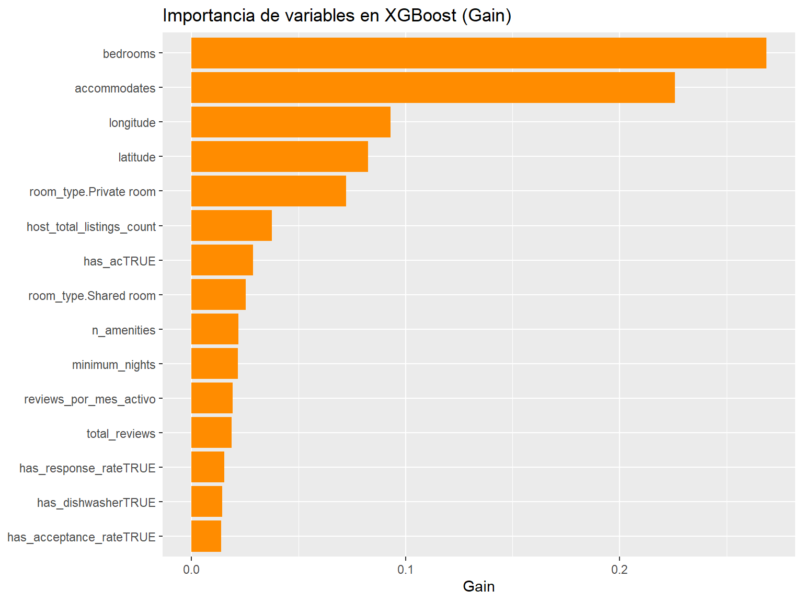
importancia_xgb %>%
slice_max(Cover, n = 15) %>%
ggplot(aes(x = reorder(Feature, Cover), y = Cover)) +
geom_col(fill = "steelblue") +
coord_flip() +
labs(title = "Importancia de variables en XGBoost (Cover)", x = NULL, y = "Cover")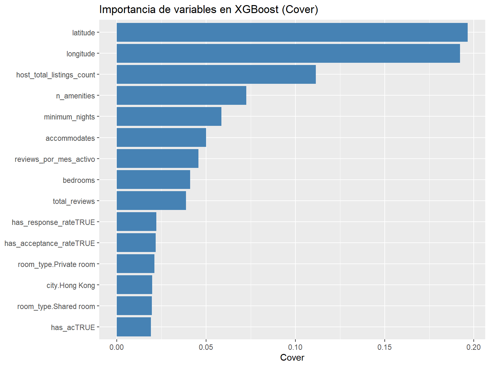
importancia_xgb %>%
slice_max(Frequency, n = 15) %>%
ggplot(aes(x = reorder(Feature, Frequency), y = Frequency)) +
geom_col(fill = "seagreen") +
coord_flip() +
labs(title = "Importancia de variables en XGBoost (Frequency)", x = NULL, y = "Frequency")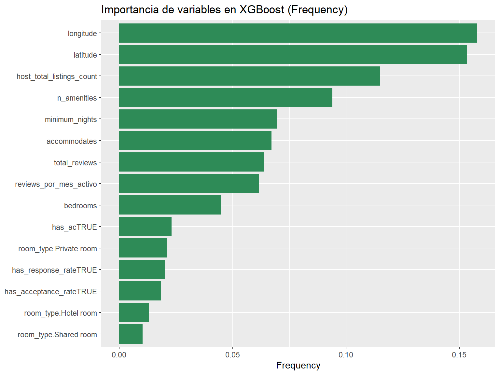
Por Gain, bedrooms (0,269) y accommodates (0,226) dominan con claridad, seguidas de longitude/latitude (0,093/0,082) y room_type.Private room (0,072) — el mismo núcleo de tamaño+ubicación+tipo que ya veníamos viendo en RFE y Random Forest.
Cover/Frequency cuentan una historia distinta, y reveladora: ahí son latitude/longitude las que dominan (Cover 0,197/0,192, Frequency 0,158/0,153), mientras que bedrooms/accommodates caen a valores mucho más bajos (Cover 0,041/0,050, Frequency 0,045/0,067). La lectura tiene sentido: bedrooms/ accommodates actúan como divisiones “quirúrgicas” — se usan en pocos nodos, pero cada una de esas divisiones reduce muchísimo el error (alta Gain, baja Frequency), probablemente cerca de la raíz de muchos árboles, separando de entrada alojamientos grandes de pequeños. latitude/longitude, en cambio, se usan en muchísimos nodos a lo largo de los árboles para ir afinando la geografía poco a poco (alta Cover/Frequency), pero cada división individual aporta menos reducción de error por sí sola.
A lo largo del proyecto se ha medido la importancia de variables con tres técnicas distintas: RFE con Random Forest (sección 3, sobre log_price_relativo), la importancia nativa de Random Forest (sección 6.4), y ahora la de XGBoost. Se comparan los rankings para ver si las mismas variables destacan de forma consistente, sea cual sea el método:
rank_rfe <- tibble(variable = vars_15, rank_rfe = seq_along(vars_15))
rank_rf <- importancia_rf %>%
arrange(desc(IncNodePurity)) %>%
mutate(rank_rf = row_number()) %>%
select(variable, rank_rf)
rank_xgb <- importancia_xgb %>%
arrange(desc(Gain)) %>%
mutate(rank_xgb = row_number()) %>%
select(variable = Feature, rank_xgb)
rank_rfe %>%
left_join(rank_rf, by = "variable") %>%
left_join(rank_xgb, by = "variable") %>%
arrange(rank_rfe)# A tibble: 15 × 4
variable rank_rfe rank_rf rank_xgb
<chr> <int> <int> <int>
1 room_type 1 5 NA
2 bedrooms 2 1 1
3 accommodates 3 2 2
4 host_total_listings_count 4 7 6
5 longitude 5 3 3
6 latitude 6 4 4
7 has_ac 7 12 NA
8 minimum_nights 8 10 10
9 has_response_rate 9 14 NA
10 city 10 11 NA
11 n_amenities 11 6 9
12 has_acceptance_rate 12 13 NA
13 reviews_por_mes_activo 13 8 11
14 has_dishwasher 14 15 NA
15 total_reviews 15 9 12rank_rfe %>%
left_join(rank_rf, by = "variable") %>%
left_join(rank_xgb, by = "variable") %>%
filter(!is.na(rank_xgb)) %>% # se excluyen las filas dummy de room_type/city sin match directo
pivot_longer(cols = c(rank_rfe, rank_rf, rank_xgb), names_to = "metodo", values_to = "rank") %>%
mutate(metodo = recode(metodo, rank_rfe = "RFE", rank_rf = "Random Forest", rank_xgb = "XGBoost"),
metodo = factor(metodo, levels = c("RFE", "Random Forest", "XGBoost"))) %>%
ggplot(aes(x = metodo, y = rank, group = variable, color = variable)) +
geom_line() +
geom_point() +
scale_y_reverse(breaks = 1:15) +
labs(title = "Ranking de importancia por variable, según los 3 métodos",
subtitle = "Arriba = más importante. Líneas planas = coherencia entre métodos",
x = NULL, y = "Ranking (1 = más importante)", color = NULL)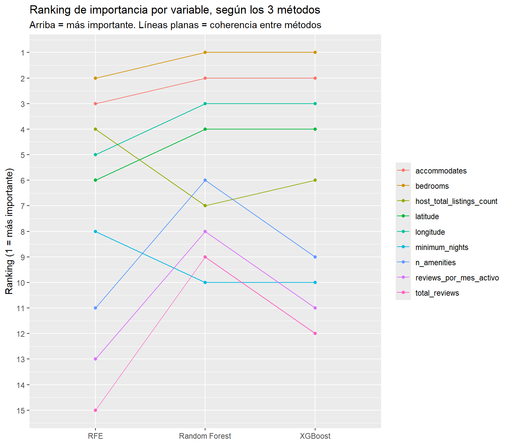
Como se anticipaba, las 6 variables categóricas/booleanas (room_type, has_ac, has_response_rate, city, has_acceptance_rate, has_dishwasher) quedan sin rank_xgb — sus nombres tras la codificación dummy (room_type.Private room, has_acTRUE…) no coinciden con el nombre original, así que no tienen un equivalente directo de una sola fila para comparar y se excluyen del gráfico.
Para las 9 variables continuas que sí tienen equivalencia directa, la coincidencia entre Random Forest y XGBoost es notable: los 4 primeros puestos son idénticos en ambos métodos (bedrooms→1, accommodates→2, longitude→3, latitude→4). RFE (que mezcla estas 9 con las 6 categóricas/booleanas en un único ranking de 15) las sitúa en posiciones absolutas distintas, pero el orden relativo entre ellas es igual de coherente: el mismo bloque de tamaño+ubicación arriba, seguido de host_total_listings_count, y el grupo de n_amenities/reviews_por_mes_activo/total_reviews/minimum_nights al final — tercera confirmación cruzada consecutiva (tras RFE↔︎RF en el clustering y RF↔︎XGBoost aquí) de que el núcleo de variables relevantes es robusto, sea cual sea el método usado para medirlo.
La importancia por sí sola dice cuánto pesa una variable, pero no en qué dirección — para eso se usan las contribuciones SHAP, ya integradas en xgboost sin necesidad de paquetes adicionales:
dtest_shap <- xgb.DMatrix(data = as.matrix(predictoras_test_xgb))
shap_contrib <- predict(modelo_xgb_final, dtest_shap, predcontrib = TRUE)
# Importancia media (valor absoluto) según SHAP, como verificación cruzada
# adicional frente a la importancia por Gain de la sección 8.1
shap_importancia <- tibble(
variable = colnames(shap_contrib)[-ncol(shap_contrib)], # se excluye la columna BIAS
shap_medio_abs = colMeans(abs(shap_contrib[, -ncol(shap_contrib)]))
) %>%
arrange(desc(shap_medio_abs))
shap_importancia %>% slice_max(shap_medio_abs, n = 10)# A tibble: 10 × 2
variable shap_medio_abs
<chr> <dbl>
1 accommodates 0.147
2 bedrooms 0.145
3 room_type.Private room 0.128
4 longitude 0.0973
5 has_acTRUE 0.0775
6 latitude 0.0753
7 has_acceptance_rateTRUE 0.0546
8 has_response_rateTRUE 0.0469
9 reviews_por_mes_activo 0.0405
10 minimum_nights 0.0356tibble(
bedrooms = predictoras_test_xgb$bedrooms,
shap_bedrooms = shap_contrib[, "bedrooms"]
) %>%
ggplot(aes(x = bedrooms, y = shap_bedrooms)) +
geom_point(alpha = 0.1, size = 0.6) +
geom_smooth(se = FALSE, color = "red") +
labs(title = "Contribución de bedrooms al precio (SHAP)",
x = "bedrooms", y = "Contribución SHAP (log_price_relativo)")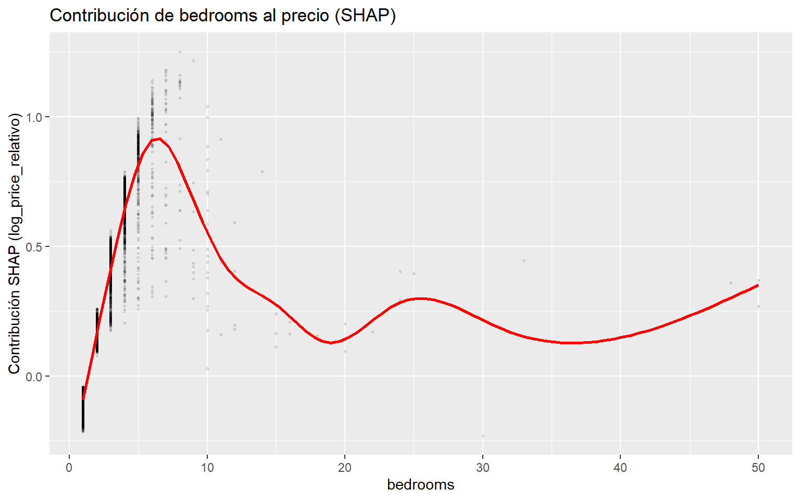
tibble(
accommodates = predictoras_test_xgb$accommodates,
shap_accommodates = shap_contrib[, "accommodates"]
) %>%
ggplot(aes(x = accommodates, y = shap_accommodates)) +
geom_point(alpha = 0.1, size = 0.6) +
geom_smooth(se = FALSE, color = "red") +
labs(title = "Contribución de accommodates al precio (SHAP)",
x = "accommodates", y = "Contribución SHAP (log_price_relativo)")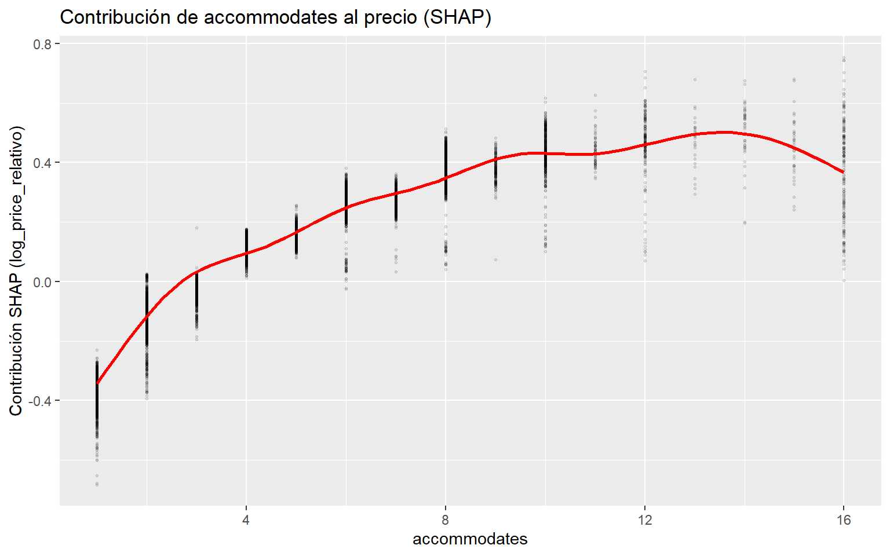
accommodates muestra la relación monótona creciente esperable: la contribución sube de forma clara y consistente de 1 a ~13 huéspedes, con un ligero techo al final (14-16, donde hay pocos datos) — “más capacidad, más contribución al precio”, sin sorpresas.
bedrooms, en cambio, no es monótona — tiene forma de U invertida. La contribución sube con fuerza hasta un pico en torno a 6-8 habitaciones, y a partir de ahí cae de forma pronunciada según bedrooms sigue aumentando, quedándose plana y baja entre 20 y 40. No es ruido: conecta directamente con la investigación de la sección 4.3 (ETL/clustering) sobre los casos de bedrooms > 10 — se confirmó entonces que son alojamientos reales de gran capacidad (hostales, aparthoteles), un segmento de mercado distinto al de las villas de 6-8 habitaciones que sí encajan con el perfil “Premium” identificado en el perfilado de clusters (sección 6, TFM_Clustering.qmd). El modelo, sin que se le haya dicho explícitamente, está capturando que “muchas habitaciones” significa cosas distintas según el contexto: una casa grande de lujo (pico de contribución), o un hostal económico de gran capacidad (contribución baja pese al tamaño) — consistente con toda la narrativa de segmentación de mercado del proyecto.
Se examinan los errores del modelo principal (XGBoost) sobre test_set con más detalle del que dio el scatter general de la sección 7.6 — dónde falla más, si falla de forma sistemática en algún segmento, y qué limitaciones hay que declarar con honestidad.
residuos <- tibble(
listing_id = test_set$listing_id,
city = test_set$city,
price_eur_real = test_set$price_eur,
price_eur_pred = pred_xgb_eur,
log_real = test_set$log_price_relativo,
log_pred = pred_xgb_log
) %>%
mutate(
residuo_log = log_real - log_pred,
residuo_eur = price_eur_real - price_eur_pred
)
summary(residuos$residuo_log) Min. 1st Qu. Median Mean 3rd Qu. Max.
-3.359550 -0.283060 -0.025952 0.001494 0.245035 6.839231 ggplot(residuos, aes(x = residuo_log)) +
geom_histogram(bins = 100, fill = "steelblue") +
geom_vline(xintercept = 0, color = "red", linetype = "dashed") +
labs(title = "Distribución de los residuos (log_price_relativo)", x = "residuo", y = "nº de listings")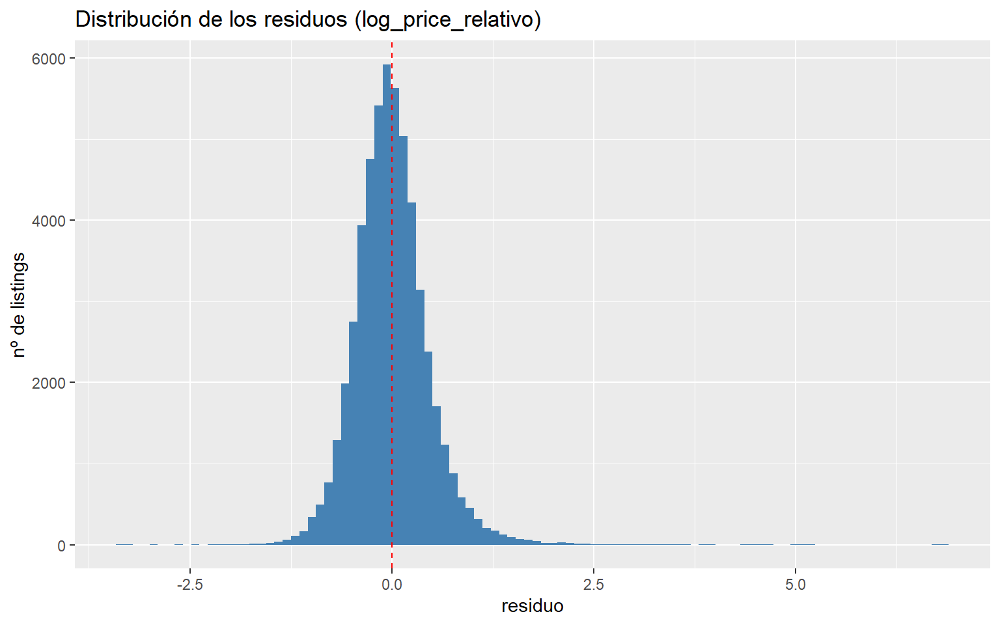
La distribución es unimodal y está centrada en 0, con la gran mayoría de los listings entre aproximadamente -1 y 1: el modelo no sobreestima ni infravalora de forma sistemática, es decir, no hay un sesgo global.
Diagnóstico clásico para detectar heterocedasticidad (si el error crece con el nivel de precio predicho):
ggplot(residuos, aes(x = log_pred, y = residuo_log)) +
geom_point(alpha = 0.1, size = 0.6) +
geom_hline(yintercept = 0, color = "red", linetype = "dashed") +
geom_smooth(se = FALSE, color = "orange") +
labs(title = "Residuos vs predicho (log_price_relativo)", x = "predicho", y = "residuo")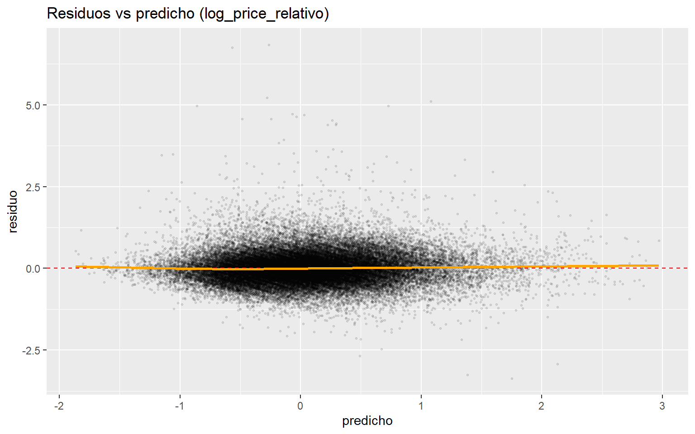
La curva de suavizado (naranja) es prácticamente plana y pegada a 0 en todo el rango predicho (aproximadamente de -1,8 a 3): el error medio no depende del nivel de precio que predice el modelo. No infravalora sistemáticamente los alojamientos caros ni sobreestima los baratos, y no queda a la vista ninguna estructura sin modelar en los residuos.
La nube tiene forma de lente, más ancha en el centro que en los extremos, pero en buena parte es un efecto de densidad: la mayoría de los listings se concentra en predicciones cercanas a 0 (la mediana de su ciudad), y con tantos puntos es normal que allí aparezcan también más valores extremos. En los extremos del rango predicho hay pocos puntos y su dispersión vertical no es mayor, así que no hay una heterocedasticidad marcada que crezca con el precio predicho.
Esto matiza la lectura de la sección 7.6: allí la dispersión en los extremos se observa frente al precio real, y al condicionar por el valor real los extremos muestran más error de forma casi mecánica. Aquí, condicionando por el valor predicho, ese abanico no aparece. Los errores grandes no están donde el modelo predice precios altos, sino en listings que el modelo sitúa cerca de la mediana de su ciudad (predicho ≈ 0) y que en realidad son mucho más caros: los puntos aislados por encima de 4-5 en la zona central del gráfico. Es coherente con la cola derecha del histograma de 9.2, y lo más probable es que sean alojamientos de lujo cuyo precio no se explica con las variables disponibles (se revisa en 9.5).
Comprobación específica: ¿el modelo falla más en alguna ciudad en particular? Especial atención a Istanbul, dado el sesgo de tipo de cambio ya documentado (secciones 1.6 y 2.4):
ggplot(residuos, aes(x = reorder(city, residuo_log, FUN = function(x) sd(x)), y = residuo_log)) +
geom_boxplot(outlier.alpha = 0.1) +
geom_hline(yintercept = 0, color = "red", linetype = "dashed") +
coord_flip() +
labs(title = "Residuos por ciudad, ordenadas por dispersión", x = NULL, y = "residuo (log)")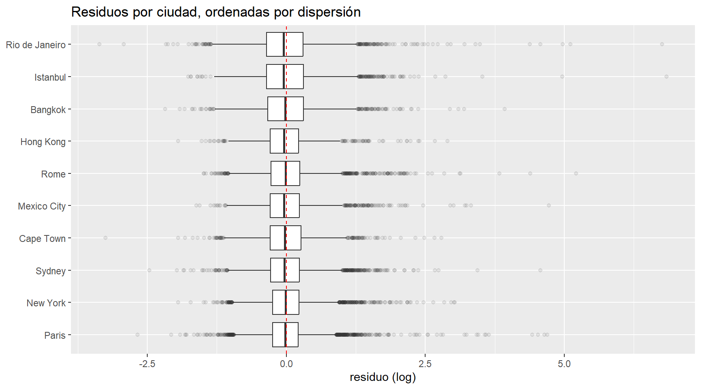
residuos %>%
group_by(city) %>%
summarise(
n = n(),
residuo_medio = mean(residuo_log),
residuo_sd = sd(residuo_log),
mae_eur = mean(abs(residuo_eur))
) %>%
arrange(desc(residuo_sd))# A tibble: 10 × 5
city n residuo_medio residuo_sd mae_eur
<fct> <int> <dbl> <dbl> <dbl>
1 Rio de Janeiro 5090 -0.00263 0.573 42.5
2 Istanbul 4760 0.000855 0.534 3.41
3 Bangkok 3761 0.0127 0.522 17.3
4 Hong Kong 1389 -0.0126 0.491 26.9
5 Rome 5430 0.00932 0.465 35.4
6 Mexico City 3935 0.000665 0.462 18.9
7 Cape Town 3693 0.00105 0.461 37.6
8 Sydney 6537 -0.00620 0.441 39.0
9 New York 7290 0.00887 0.412 37.6
10 Paris 12737 -0.00161 0.399 34.8 Resultado contrario a lo anticipado, con un matiz importante que hay que explicar bien: Istanbul no destaca con mayor dispersión — de hecho tiene un residuo_medio prácticamente nulo (0,0009, esencialmente sin sesgo) y su residuo_sd (0,534) es la segunda más baja de las 10 ciudades. Rio de Janeiro es, en realidad, la que peor se predice en términos relativos (residuo_sd=0,573, la más alta).
Esto no contradice la limitación documentada del tipo de cambio — la confirma de otra forma. El target log_price_relativo es, por construcción algebraica (sección 2.4), inmune al sesgo de conversión, así que es coherente que Istanbul no muestre sesgo en esta escala. Fijándonos en mae_eur: Istanbul tiene, con diferencia, el error absoluto más pequeño (3,41€, frente a 17-42€ del resto) — esto no significa que el modelo prediga mejor Istanbul, es un artefacto directo de que sus precios absolutos están artificialmente comprimidos por el tipo de cambio (mediana ≈4,47€): el mismo error relativo, aplicado a una escala de precios mucho más pequeña, produce un error en euros trivialmente bajo. Sería engañoso presentar esa cifra sin esta matización.
residuos %>%
arrange(desc(abs(residuo_eur))) %>%
select(listing_id, city, price_eur_real, price_eur_pred, residuo_eur) %>%
head(10)# A tibble: 10 × 5
listing_id city price_eur_real price_eur_pred residuo_eur
<dbl> <fct> <dbl> <dbl> <dbl>
1 14331562 Rio de Janeiro 21523. 25.0 21498.
2 25369030 Rio de Janeiro 21523. 130. 21393.
3 34008067 Paris 9631 104. 9527.
4 15817288 Rome 9021 49.3 8972.
5 35758028 Paris 9000 82.4 8918.
6 18424066 Paris 9000 107. 8893.
7 243040 Paris 8000 77.2 7923.
8 40803662 Rome 7000 86.9 6913.
9 41652684 Paris 5000 163. 4837.
10 21439397 Sydney 4428. 45.7 4383.Los 10 casos con mayor error absoluto son, sin excepción, alojamientos extremadamente caros en términos absolutos (entre 4.428€ y 21.523€ la noche), que el modelo predice en una fracción de su precio real (25€-163€). No son casos residuales del patrón de “bloqueo de calendario” (ya excluidos vía precio_sospechoso, que requiere ausencia de reseñas) — son casos excepcionales, con precios muy alejados de su mercado, simplemente demasiado raros en el dataset para que el modelo aprenda a extrapolar su precio correctamente. Es la limitación esperable de cualquier modelo entrenado mayoritariamente sobre el rango “típico” de precios: pierde precisión en la cola derecha extrema, coherente con la mayor dispersión ya vista en el scatter de la sección 7.6.
price_eur bruto (fase 2), pero lejos de la perfección — coherente con la limitación ya documentada en la fase de clustering: el precio de un alojamiento depende de factores no capturados en el dataset (calidad percibida de fotos/descripción, dinámica de oferta-demanda en tiempo real, política de precios dinámicos del anfitrión).Se integra el modelo final (XGBoost, sección 5.3) en dos funciones que serán el motor de la aplicación final: recomendar_precio(), que a partir de las características de un alojamiento devuelve su posición relativa en el mercado de su ciudad, el precio en moneda local (y en euros como referencia) y un rango de incertidumbre; y explicar_precio(), que indica qué características explican ese precio frente al alojamiento medio de su ciudad.
Una predicción puntual con R²≈0,6 transmite una precisión que el modelo no tiene, así que se acompaña de un rango basado en los cuantiles empíricos de los residuos de la sección 9, sin asumir normalidad. Para que los datos que calibran el rango no sean los mismos que comprueban su cobertura, el test_set se divide en dos mitades: una calibra los cuantiles y la otra verifica cuántos alojamientos caen realmente dentro del rango (80% nominal: cuantiles 10% y 90%):
set.seed(123)
idx_calibracion <- sample(nrow(residuos), nrow(residuos) %/% 2)
res_calibracion <- residuos[idx_calibracion, ]
res_comprobacion <- residuos[-idx_calibracion, ]
cuantiles_rango <- quantile(res_calibracion$residuo_log, probs = c(0.10, 0.90))
cuantiles_rango 10% 90%
-0.5198139 0.5304556 res_comprobacion <- res_comprobacion %>%
mutate(dentro_rango = residuo_log >= cuantiles_rango[1] & residuo_log <= cuantiles_rango[2])
# Cobertura global (debería rondar el 80%)
mean(res_comprobacion$dentro_rango)[1] 0.7945516# Cobertura por ciudad
res_comprobacion %>%
group_by(city) %>%
summarise(n = n(), cobertura = mean(dentro_rango)) %>%
arrange(cobertura)# A tibble: 10 × 3
city n cobertura
<fct> <int> <dbl>
1 Rio de Janeiro 2576 0.700
2 Bangkok 1919 0.719
3 Istanbul 2329 0.721
4 Cape Town 1802 0.773
5 Hong Kong 708 0.788
6 Sydney 3275 0.803
7 Rome 2711 0.806
8 Mexico City 1989 0.807
9 New York 3636 0.833
10 Paris 6366 0.854Los cuantiles son casi simétricos (−0,52 y +0,53): el rango multiplica la predicción por ≈0,59 y ≈1,70. Es ancho, pero es el ancho real del error del modelo (R²≈0,6), no un defecto del cálculo. La cobertura global (79,5%) coincide con el 80% nominal, pero por ciudad varía entre el 70,0% de Rio de Janeiro y el 85,4% de Paris: con Rio, Bangkok e Istanbul (≈70-72%) el rango global se queda corto, y con Paris y New York (>83%) va sobrado. Un único rango es correcto de media pero desigual entre ciudades, así que se calibra por ciudad (sección 10.2).
Un rango más estrecho tiene un coste inevitable: cubre menos casos. Para que sirva como referencia habitual se baja el nivel del 80% al 50% (cuantiles 25% y 75%), y se calibra dentro de cada ciudad. nivel_rango se puede cambiar en una línea. Se comprueba de nuevo la cobertura en la mitad reservada del test_set:
nivel_rango <- 0.50
probs_rango <- c((1 - nivel_rango) / 2, 1 - (1 - nivel_rango) / 2)
cuantiles_cal <- res_calibracion %>%
group_by(city) %>%
summarise(
q_inf = unname(quantile(residuo_log, probs_rango[1])),
q_sup = unname(quantile(residuo_log, probs_rango[2])),
.groups = "drop"
)
cobertura_ciudad <- res_comprobacion %>%
select(city, residuo_log) %>%
left_join(cuantiles_cal, by = "city") %>%
mutate(dentro = residuo_log >= q_inf & residuo_log <= q_sup)
# Cobertura global (debería rondar el nivel elegido)
mean(cobertura_ciudad$dentro)[1] 0.4930248cobertura_ciudad %>%
group_by(city) %>%
summarise(
n = n(),
cobertura = mean(dentro),
rango_relativo = paste0(sprintf("%+.0f%%", (exp(first(q_inf)) - 1) * 100), " a ",
sprintf("%+.0f%%", (exp(first(q_sup)) - 1) * 100)),
.groups = "drop"
) %>%
arrange(cobertura)# A tibble: 10 × 4
city n cobertura rango_relativo
<fct> <int> <dbl> <chr>
1 Rome 2711 0.461 -22% a +26%
2 Sydney 3275 0.476 -24% a +25%
3 Paris 6366 0.492 -22% a +23%
4 Cape Town 1802 0.492 -24% a +32%
5 Mexico City 1989 0.494 -24% a +27%
6 New York 3636 0.495 -23% a +25%
7 Bangkok 1919 0.497 -29% a +35%
8 Rio de Janeiro 2576 0.510 -30% a +36%
9 Istanbul 2329 0.523 -30% a +37%
10 Hong Kong 708 0.527 -27% a +25% La cobertura global (49,3%) encaja casi exactamente con el 50% nominal, y por ciudad ya no hay el desequilibrio de la sección 10.1: se mueve entre el 46,1% (Rome) y el 52,7% (Hong Kong), un rango de apenas 6,6 puntos frente a los 15,4 puntos (70,0%-85,4%) del rango único. Los anchos por ciudad también reflejan la dispersión real de cada mercado: Rome, Sydney, Paris y New York quedan en torno a ±22-25%, mientras que Istanbul, Rio de Janeiro y Bangkok —las tres ciudades con mayor residuo_sd en la sección 9.4— se quedan más anchas, entre -29/+35% y -30/+37%. Frente al -49%/+65% (aprox.) del rango global de 10.1, el ajuste por ciudad reduce el ancho a más o menos la mitad en casi todas las ciudades, sin inflar artificialmente la confianza en las que peor se predicen.
Comprobada la cobertura, los cuantiles definitivos se recalculan con el test_set completo (el doble de datos por ciudad) y son los que usa la función:
cuantiles_ciudad <- residuos %>%
group_by(city) %>%
summarise(
q_inf = unname(quantile(residuo_log, probs_rango[1])),
q_sup = unname(quantile(residuo_log, probs_rango[2])),
.groups = "drop"
)
cuantiles_ciudad %>%
mutate(rango_relativo = paste0(sprintf("%+.0f%%", (exp(q_inf) - 1) * 100), " a ",
sprintf("%+.0f%%", (exp(q_sup) - 1) * 100)))# A tibble: 10 × 4
city q_inf q_sup rango_relativo
<fct> <dbl> <dbl> <chr>
1 Bangkok -0.330 0.309 -28% a +36%
2 Cape Town -0.290 0.264 -25% a +30%
3 Hong Kong -0.291 0.218 -25% a +24%
4 Istanbul -0.354 0.307 -30% a +36%
5 Mexico City -0.286 0.239 -25% a +27%
6 New York -0.248 0.232 -22% a +26%
7 Paris -0.244 0.212 -22% a +24%
8 Rio de Janeiro -0.353 0.299 -30% a +35%
9 Rome -0.272 0.241 -24% a +27%
10 Sydney -0.282 0.234 -25% a +26% El modelo predice la posición relativa respecto a la mediana de la ciudad. El precio en moneda local se obtiene multiplicándola por la mediana de price (moneda local) de esa ciudad, calculada sobre el mismo conjunto que genera el target (sección 4.1); el precio en euros, con la mediana de price_eur (sección 7.4). La columna tipo_cambio_implicito permite comprobar que la moneda asignada a cada ciudad es la correcta:
moneda_ciudad <- tribble(
~city, ~moneda,
"Bangkok", "THB",
"Cape Town", "ZAR",
"Hong Kong", "HKD",
"Istanbul", "TRY",
"Mexico City", "MXN",
"New York", "USD",
"Paris", "EUR",
"Rio de Janeiro", "BRL",
"Rome", "EUR",
"Sydney", "AUD"
)
referencias_ciudad <- listings %>%
filter(!precio_sospechoso) %>%
group_by(city) %>%
summarise(mediana_local = median(price, na.rm = TRUE), .groups = "drop") %>%
left_join(
medianas_ciudad %>%
mutate(city = as.character(city)) %>%
rename(mediana_eur = mediana_ciudad),
by = "city"
) %>%
left_join(moneda_ciudad, by = "city") %>%
mutate(tipo_cambio_implicito = mediana_eur / mediana_local)
referencias_ciudad# A tibble: 10 × 5
city mediana_local mediana_eur moneda tipo_cambio_implicito
<chr> <dbl> <dbl> <chr> <dbl>
1 Bangkok 1051 27.3 THB 0.0260
2 Cape Town 1001 53.6 ZAR 0.0535
3 Hong Kong 380 41.8 HKD 0.110
4 Istanbul 250 4.47 TRY 0.0179
5 Mexico City 650 33.0 MXN 0.0507
6 New York 98 84.5 USD 0.862
7 Paris 80 80 EUR 1
8 Rio de Janeiro 265 44.2 BRL 0.167
9 Rome 65 65 EUR 1
10 Sydney 120 74.1 AUD 0.618 redondeo_precio <- function(x) ifelse(x < 10, round(x, 1), round(x))
recomendar_precio <- function(listing, modelo = modelo_xgb_final,
cuantiles = cuantiles_ciudad) {
listing <- as.data.frame(listing)
ciudad <- as.character(listing$city)
log_pred <- predict(modelo, as.matrix(predict(dummies, newdata = listing)))
ref <- referencias_ciudad[match(ciudad, referencias_ciudad$city), ]
q <- cuantiles[match(ciudad, as.character(cuantiles$city)), ]
log_min <- log_pred + q$q_inf
log_max <- log_pred + q$q_sup
tibble(
ciudad = ciudad,
moneda = ref$moneda,
pos_relativa_pct = (exp(log_pred) - 1) * 100,
pos_min_pct = (exp(log_min) - 1) * 100,
pos_max_pct = (exp(log_max) - 1) * 100,
precio_local = round(exp(log_pred) * ref$mediana_local),
rango_local_min = round(exp(log_min) * ref$mediana_local),
rango_local_max = round(exp(log_max) * ref$mediana_local),
precio_eur = redondeo_precio(exp(log_pred) * ref$mediana_eur),
rango_eur_min = redondeo_precio(exp(log_min) * ref$mediana_eur),
rango_eur_max = redondeo_precio(exp(log_max) * ref$mediana_eur)
)
}pos_relativa_pct se lee como “% por encima (+) o por debajo (−) de la mediana de su ciudad”.
Se toma un alojamiento del test_set (que el modelo no ha visto en el entrenamiento) de tres ciudades con perfiles distintos —Paris (mercado típico), New York (mercado regulado del clustering) e Istanbul (moneda muy devaluada frente al euro)—, elegido al azar dentro de cada ciudad, y se compara la recomendación con su precio real:
set.seed(102)
ejemplos <- test_set %>%
filter(city %in% c("Paris", "New York", "Istanbul")) %>%
group_by(city) %>%
slice_sample(n = 1) %>%
ungroup()
ejemplos %>%
select(listing_id, city, room_type, bedrooms, accommodates, n_amenities, has_ac)# A tibble: 3 × 7
listing_id city room_type bedrooms accommodates n_amenities has_ac
<dbl> <fct> <fct> <dbl> <dbl> <dbl> <lgl>
1 46390098 Istanbul Entire place 1 1 29 TRUE
2 1100421 New York Entire place 1 2 37 TRUE
3 13827916 Paris Entire place 2 4 12 FALSE recomendaciones <- lapply(seq_len(nrow(ejemplos)), function(i) recomendar_precio(ejemplos[i, ])) %>%
bind_rows() %>%
mutate(
precio_real_local = listings$price[match(ejemplos$listing_id, listings$listing_id)],
precio_real_eur = ejemplos$price_eur,
pos_real_pct = (exp(ejemplos$log_price_relativo) - 1) * 100,
real_en_rango = precio_real_local >= rango_local_min & precio_real_local <= rango_local_max
)
pct_signo <- function(x) sprintf("%+d%%", as.integer(round(x)))
# Posición relativa (output principal)
recomendaciones %>%
transmute(
Ciudad = ciudad,
`Posición predicha` = pct_signo(pos_relativa_pct),
`Rango (50%)` = paste0(pct_signo(pos_min_pct), " a ", pct_signo(pos_max_pct)),
`Posición real` = pct_signo(pos_real_pct),
`¿Real en rango?` = if_else(real_en_rango, "Sí", "No")
) %>%
knitr::kable(
align = "lcccc",
caption = "Posición relativa: % sobre (+) o bajo (−) la mediana de la ciudad."
)| Ciudad | Posición predicha | Rango (50%) | Posición real | ¿Real en rango? |
|---|---|---|---|---|
| Istanbul | -9% | -36% a +24% | +12% | Sí |
| New York | +53% | +20% a +93% | +68% | Sí |
| Paris | +72% | +34% a +112% | +100% | Sí |
# Precio en moneda local y en euros
recomendaciones %>%
transmute(
Ciudad = ciudad,
Recomendado = paste(precio_local, moneda),
`Rango (50%)` = paste0(rango_local_min, " – ", rango_local_max, " ", moneda),
Real = paste(round(precio_real_local), moneda),
`Recomendado (€)` = paste0(precio_eur, " €"),
`Real (€)` = paste0(redondeo_precio(precio_real_eur), " €")
) %>%
knitr::kable(
align = "lccccc",
caption = "Precio por noche en moneda local (principal) y en euros (referencia)."
)| Ciudad | Recomendado | Rango (50%) | Real | Recomendado (€) | Real (€) |
|---|---|---|---|---|---|
| Istanbul | 228 TRY | 160 – 310 TRY | 280 TRY | 4.1 € | 5 € |
| New York | 150 USD | 117 – 189 USD | 165 USD | 130 € | 142 € |
| Paris | 137 EUR | 108 – 170 EUR | 160 EUR | 137 € | 160 € |
En los tres ejemplos el precio real cae dentro del rango del 50%: Istanbul (-9% predicho, real +12%, dentro de -36%/+24%), New York (+53% predicho, real +68%, dentro de +20%/+93%) y Paris (+72% predicho, real +100%, dentro de +34%/+112%). Los tres están además claramente por encima de la mediana de su ciudad, con Paris como el caso más marcado (137 EUR recomendados frente a 160 EUR reales, ambos muy por encima de la mediana parisina). Como se advertía antes de ejecutar, esto es una ilustración de que el rango funciona en casos concretos, no una validación — para eso está la cobertura de la sección 10.2.
El modelo predice la posición relativa, pero además hay que poder explicar por qué. XGBoost devuelve, para cada predicción, la contribución de cada variable (SHAP, ya usada en la sección 8.3). Aquí se agrupan las columnas dummy en las 15 variables originales y se mide la contribución de cada una frente al alojamiento medio de su ciudad (la media de las contribuciones de los alojamientos de esa ciudad en el test_set), de modo que la explicación es siempre relativa al mercado del propio alojamiento. Las contribuciones están en escala log, así que se leen como efecto multiplicativo sobre el precio (+10% = precio un 10% mayor por esa variable) y se combinan multiplicándose, no sumándose:
shap_test <- predict(modelo_xgb_final, as.matrix(predictoras_test_xgb), predcontrib = TRUE)
# `dummyVars(~ ., fullRank = TRUE)` añade una columna "(Intercept)" (constante,
# no es una variable real) además de la columna "BIAS" que añade el propio SHAP.
cols_shap <- setdiff(colnames(shap_test), c("BIAS", "(Intercept)"))
vars_modelo <- setdiff(names(train_set), c("listing_id", "log_price_relativo", "price_eur"))
# Cada columna dummy se asigna a su variable original (la de nombre más largo
# que sea prefijo de la columna, para no confundir has_ac con has_acceptance_rate).
# Si alguna columna no encaja con ninguna variable, se informa con su nombre
# exacto en vez de fallar en silencio (evita el error de vapply length 0).
variable_de_columna <- vapply(cols_shap, function(col) {
candidatas <- vars_modelo[startsWith(col, vars_modelo)]
if (length(candidatas) == 0) return(NA_character_)
candidatas[which.max(nchar(candidatas))]
}, character(1))
sin_match <- cols_shap[is.na(variable_de_columna)]
if (length(sin_match) > 0) {
stop("Columnas SHAP sin variable original que las explique: ",
paste(sin_match, collapse = " | "))
}
A <- sapply(vars_modelo, function(v) as.numeric(variable_de_columna == v))
rownames(A) <- cols_shap
# Contribución por variable original (n x 15) y referencia de cada ciudad.
# Las columnas se prefijan con "shap__" porque una de las 15 variables
# originales es justo `city`: sin el prefijo, esta columna numérica (la
# contribución SHAP de la variable city) chocaría de nombre con la columna
# `city` de texto que identifica la ciudad, y el mutate() de abajo la
# sobrescribiría en silencio (eso causaba los NA de la comprobación).
shap_var <- shap_test[, cols_shap, drop = FALSE] %*% A
colnames(shap_var) <- paste0("shap__", vars_modelo)
base_ciudad <- as_tibble(shap_var) %>%
mutate(city = as.character(test_set$city), pred_log = rowSums(shap_test)) %>%
group_by(city) %>%
summarise(across(everything(), mean), .groups = "drop")
# Comprobación: las contribuciones suman exactamente la predicción (debe ser ≈0)
max(abs(rowSums(shap_test) - pred_xgb_log))[1] 4.00436e-06explicar_precio <- function(listing, modelo = modelo_xgb_final) {
listing <- as.data.frame(listing)
ciudad <- as.character(listing$city)
contrib <- predict(modelo, as.matrix(predict(dummies, newdata = listing)), predcontrib = TRUE)
shap_nuevo <- as.numeric(contrib[, cols_shap, drop = FALSE] %*% A)
ref_pred <- base_ciudad[match(ciudad, base_ciudad$city), ]
ref <- referencias_ciudad[match(ciudad, referencias_ciudad$city), ]
efecto_log <- shap_nuevo - as.numeric(unlist(ref_pred[, paste0("shap__", vars_modelo)]))
log_pred <- sum(contrib)
list(
ciudad = ciudad,
moneda = ref$moneda,
precio_referencia_local = round(exp(ref_pred$pred_log) * ref$mediana_local),
precio_local = round(exp(log_pred) * ref$mediana_local),
log_pred = log_pred,
log_ref = ref_pred$pred_log,
detalle = tibble(
variable = vars_modelo,
valor = vapply(vars_modelo, function(v) as.character(listing[[v]]), character(1)),
efecto_log = efecto_log,
efecto_pct = (exp(efecto_log) - 1) * 100
) %>% arrange(desc(abs(efecto_log)))
)
}
grafico_explicacion <- function(expl, top = 6) {
detalle <- expl$detalle
resto <- detalle %>%
slice_tail(n = nrow(detalle) - top) %>%
summarise(variable = "resto de variables", valor = "", efecto_log = sum(efecto_log)) %>%
mutate(efecto_pct = (exp(efecto_log) - 1) * 100)
bind_rows(slice_head(detalle, n = top), resto) %>%
mutate(etiqueta = if_else(valor == "", variable, paste0(variable, " = ", valor))) %>%
ggplot(aes(x = efecto_pct, y = reorder(etiqueta, abs(efecto_log)), fill = efecto_pct > 0)) +
geom_col(show.legend = FALSE) +
geom_text(aes(label = sprintf("%+.0f%%", efecto_pct),
hjust = if_else(efecto_pct >= 0, -0.1, 1.1))) +
scale_fill_manual(values = c(`TRUE` = "steelblue", `FALSE` = "firebrick")) +
scale_x_continuous(expand = expansion(mult = 0.15)) +
labs(
title = paste0("Por qué ese precio en ", expl$ciudad),
subtitle = paste0("Alojamiento medio de la ciudad: ", expl$precio_referencia_local, " ",
expl$moneda, " → precio recomendado: ", expl$precio_local, " ",
expl$moneda),
x = "Efecto sobre el precio (%)", y = NULL
)
}Se comprueba que, en los tres ejemplos, el efecto de las 15 variables suma exactamente la diferencia entre la predicción y la referencia de su ciudad (en escala log), y se dibuja la explicación de cada uno:
# Debe dar ≈0 en los tres ejemplos
sapply(seq_len(nrow(ejemplos)), function(i) {
e <- explicar_precio(ejemplos[i, ])
sum(e$detalle$efecto_log) - (e$log_pred - e$log_ref)
})[1] 0 0 0for (i in seq_len(nrow(ejemplos))) {
print(grafico_explicacion(explicar_precio(ejemplos[i, ])))
}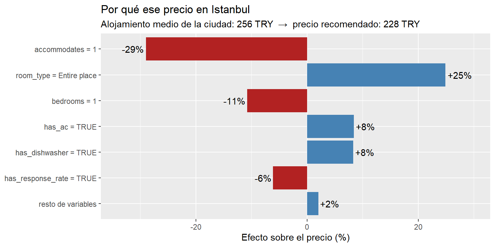
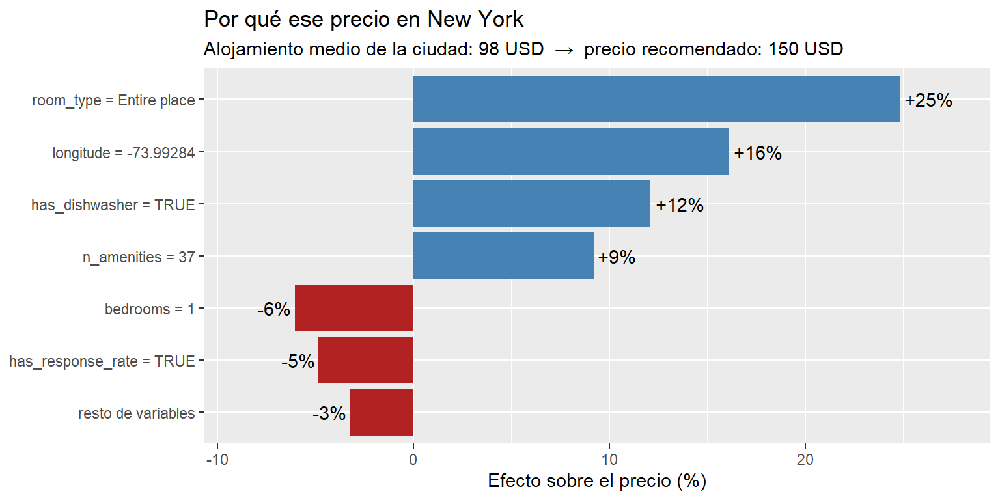
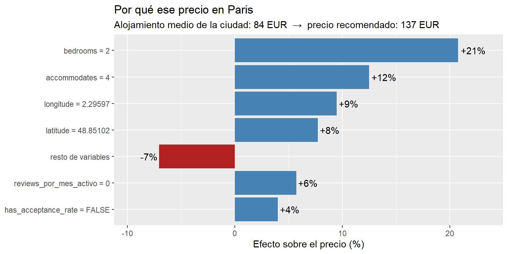
La comprobación da 0 0 0 exacto: el efecto de las 15 variables reconstruye la predicción al céntimo, ya sin el bug de la columna city duplicada.
En Istanbul, el alojamiento recomendado (228 TRY) queda por debajo del medio de la ciudad (256 TRY): accommodates = 1 pesa más que ninguna otra variable (-29%) y bedrooms = 1 suma otro -11%, un alojamiento pequeño que solo se compensa en parte con room_type = Entire place (+25%). En New York, al revés, el recomendado (150 USD) casi dobla el medio (98 USD): aquí no es el tamaño sino la combinación de room_type = Entire place (+25%) y, sobre todo, la longitude concreta del listing (+16%) — la ubicación actuando de proxy del barrio, coherente con que longitude/latitude sean el 3º y 4º predictor en importancia (sección 8.2). En Paris, el recomendado (137 EUR frente a 84 EUR de media) se explica casi todo por tamaño: bedrooms = 2 (+21%) y accommodates = 4 (+12%), con longitude/latitude sumando otro +17% conjunto.
El sentido de estos efectos encaja con la sección 8: tamaño (bedrooms, accommodates) y ubicación (longitude, latitude) dominan, como ya mostraba el ranking de importancia. has_response_rate = TRUE aparece con efecto negativo en dos de los tres ejemplos (-6% en Istanbul, -5% en New York). En el ETL (TFM_Airbnb_ETL) esta variable se define como has_response_rate = !is.na(host_response_rate): no mide la tasa de respuesta en sí, sino si el host tiene una tasa registrada (frente a NA para anfitriones sin historial de mensajes o sin reservas previas). Un efecto negativo no es entonces una señal de mala calidad, sino que apunta a que, controlando por el resto de variables, los alojamientos con historial de respuesta ya registrado tienden a ser ligeramente más baratos que los que aún no lo tienen — coherente con que la ausencia de historial (anfitriones/listings nuevos, o gestión profesional sin ese dato) se asocie más con el segmento premium que con el habitual.
nivel_rango <- 0.80 se obtiene el rango amplio.Exporta todo lo que necesita la aplicación práctica (Recomendador de precio, desplegada en HuggingFace Spaces): el modelo entrenado en un formato que Python puede leer sin reentrenar, las tablas de referencia de recomendar_precio()/ explicar_precio(), y los metadatos para construir el formulario de la app.
# Exportación de artefactos para la app.
dir.create("app_artefactos", showWarnings = FALSE)
# 1. Modelo XGBoost en formato nativo
xgb.save(modelo_xgb_final, "app_artefactos/modelo_xgb.json")[1] TRUE# 2. Tablas de referencia, a CSV
write.csv(cuantiles_ciudad, "app_artefactos/cuantiles_ciudad.csv", row.names = FALSE)
write.csv(referencias_ciudad, "app_artefactos/referencias_ciudad.csv", row.names = FALSE)
write.csv(base_ciudad, "app_artefactos/base_ciudad.csv", row.names = FALSE)
# 3. Metadatos de las 15 variables
metadatos_variables <- lapply(vars_modelo, function(v) {
col <- train_set[[v]]
if (is.numeric(col)) {
list(variable = v, tipo = "numerica", min = min(col, na.rm = TRUE),
max = max(col, na.rm = TRUE), mediana = median(col, na.rm = TRUE))
} else if (is.logical(col)) {
list(variable = v, tipo = "logica", niveles = c(TRUE, FALSE))
} else {
list(variable = v, tipo = "categorica", niveles = levels(as.factor(col)))
}
})
jsonlite::write_json(metadatos_variables, "app_artefactos/metadatos_variables.json",
auto_unbox = TRUE, pretty = TRUE)
# 4. La matriz A (agregación dummy -> variable original) y cols_shap, en JSON
jsonlite::write_json(
list(cols_shap = cols_shap, vars_modelo = vars_modelo),
"app_artefactos/shap_mapeo.json",
auto_unbox = TRUE, pretty = TRUE
)
cat("Listo. Contenido de app_artefactos/:\n")Listo. Contenido de app_artefactos/:print(list.files("app_artefactos"))[1] "base_ciudad.csv" "centros_ciudad.csv"
[3] "cuantiles_ciudad.csv" "metadatos_variables.json"
[5] "modelo_xgb.json" "referencias_ciudad.csv"
[7] "shap_mapeo.json" # Centro de cada ciudad (mediana de lat/lon), para centrar el mapa al elegir
# ciudad en el formulario.
centros_ciudad <- listings %>%
filter(!precio_sospechoso) %>%
group_by(city) %>%
summarise(
centro_lat = median(latitude, na.rm = TRUE),
centro_lon = median(longitude, na.rm = TRUE),
.groups = "drop"
)
write.csv(centros_ciudad, "app_artefactos/centros_ciudad.csv", row.names = FALSE)
centros_ciudad# A tibble: 10 × 3
city centro_lat centro_lon
<chr> <dbl> <dbl>
1 Bangkok 13.7 101.
2 Cape Town -33.9 18.4
3 Hong Kong 22.3 114.
4 Istanbul 41.0 29.0
5 Mexico City 19.4 -99.2
6 New York 40.7 -74.0
7 Paris 48.9 2.35
8 Rio de Janeiro -23.0 -43.2
9 Rome 41.9 12.5
10 Sydney -33.9 151.